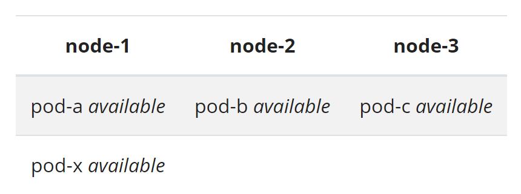

Software Engineering
DevOps
DevOps culture aims to achieve efficiency in Software Development Life Cycle. Areas to improve in SDLC will differ by organizations but will generally include
- Deliever busniess requirement in agile fashion
- Reduce time to deploy
- Fast reponse to errors
- Robust security control
- Achieve target reliability
DevOps qualifications
- Branching strategy (Git flow, Github flow)
- Deployment and release strategy (Blue/Green, Canary, Dark Launch)
- Configuration (Salt, Ansible)
- Provisioning (Terraform)
- Containerization (Docker)
- Cloud computing (GCP, Azure, AWS)
- Container orchestration (Kubernetes)
- CI/CD, SDLC (Jenkins)
- Scripting (Bash, Python, Groovy)
- Code build (Maven, npm, gradle)
- Security (SonarQube, Veracode, TLS/SSL, AD/LDAP)
- 1. Cloud
- 2. Continuous Integration
- 3. Continuous Delivery
- 4. Microservice-centric architecture
- 5. Test Automation
- 6. Infrastructure/Configuration as Code
- 7. Continuous Monitoring
- 8. Release strategy
- 9. Security
- 10. Scaliability and Reliablity
- 11. Network
- 12. Agile
- 13. DevOps Culture and Metrics
- 14. DB Basic
- 15. Pipelining
- 16. Message vs. Event
1. Cloud
Compute Power (three approaches)
- VM : Physical Hardware -> Operating System -> Hypervisor controller -> VM (App, OS, Virtual Hardware)
- Container : Physical Hardware -> Operating System -> Container Engine -> Container (App, dependencies)
- Serverless : Physical Hardware -> Operating System -> Serverless Runtime -> Function
4 types of computing resource management reponsibility by the users
- On-premises : Networking / Storage / Servers / Virtualization / OS / Middleware / Runtime / Data / Application
- Infrastructure as a Service : OS / Middleware / Runtime / Data / Application
- Platform as a Service : Data / Application
- Software as a Service : Everything is managed by Cloud Provider
Characteristics of cloud native
- Lightweight APIs
- Containers as standard deployment format
- Microservices
- Security at scale (Ex. Security tools provided by the Vendor)
- Reliability (Ex. Fully managed DB with high availability)
- Fast innovation (Ex. Serverless scales without managing infrastructure)
2. Continuous Integration
Continuous Integration means fast and automated feedback whenever there is code change
Continuous Integration may include
- builds
- unit test
- static analysis
- dynamic analysis
- package
3. Continuous Delivery
Continuous Delivery means fast deployment of new features to production

Continuous Delivery requires
- Externalized Configuration
- Automated tests
- Short build time (Failing slow tests!)
- Isolated and small pipeline steps
- Modularized code-base and parallel builds
4. Microservice-centric architecture
Example migration pattern from legacy system to modern architecture

Monolithic
- All components of application are colocated within a single unit
- Tied to a single technology stack
- Data schema updates can be difficult since entire business logic shared a single DB
- Difficult to scale services independently
Microservice
- Small, independent, and loosely coupled, thus can be deployed and scaled independently
- Impact of bugs from each component can be limited
- Each service is typically responsible for its own data
- Managing dependencies between components can be challenging (Ex. features of component A depends on features of component B)
Serverless
- PaaS where business logic runs as functions
- Executions are event driven (http request, schedule, messages added to a queue, DB events, etc)
- Pros: only charged for what is used, automatic scaling
- Cons: there are execution timeouts of functions for each cloud provider, high frequency exeuctions can be cheaper in VM than in serverless
5. Test Automation
- Unit test - test each method/function
- Integration test - test all components/modules of application togerther
- Behavior/Functional test - test business logic
- Non-Functional test - test roll-back, roll-forward, performance/load/stress, penetration, compliance, etc
- User Acceptance test - test user interface
Volumn of each test should be the following

- Because unit tests are for each method/function, there is no limit on how many tests you should have
- Integration/Functional tests should have enough size to catch potential errors at earlier stage
- UI tests will however frequently be modified based on changes on application layout, so this test should be small
6. Infrastructure/Configuration as Code
Infrastructure as Code
- No changes via GUI
- No live modification of instance (Immutable Server) - automating provisioning and recovery
- Versioning every infrastructure changes - making infrastructure reproducible
Configuration as Code
- Idempotency - operation results in the same outcome each time we apply
7. Monitoring
- Hook the test: Not only monitor availablity of services and resource comsumption, also periodically run tests to catch potential errors early
- Auto-correction upon finding problems: bring up the services that are down, clean up disk space by removing tmp files, safe or hard restart the server to clear memory, etc
Dickerson hierarchy of reliability
- monitoring: understand what is running in production. relibility is measured from customer perspective (there is no difference between system failing due to code bug or scaling issue from customers' point of view)
- incident response: respond with urgency, rather than react. focus on clear communication and make information accessible
- post-incident review: this is for pure learning purpose. it must be blameless. it is not document or report. understand that human errors do happen but they are not the cause of failures but symtom of larger problems
- test and release procedures:
- capacity planning:
- development:
- product:
8. Release strategy
Blue-Green
- Deployment strategy to avoid downtown during deployment
- Using IaC, deploy new instance "Green" (existing instance will be called "Blue")
- Run tests on Green instance
- Make "Green" the production instance - switch traffic from Blue to Green by re-mapping DNS to Green's IP address, remove Blue from load-balancer and add Green, etc
Carnary
- Similar to Blue-Green but redirect only subset of users instead of all users (choose users who are more active, etc)
- Both Blue and Green would be up during this time
- Great way to do capacity testing on new instance (can always roll-back by redirecting users to old instance)
- Management of multiple versions of Software is required
Dark-launching
- releasing production-ready features to subset of users prior to full release
- Feature toggle - run specific part of code based on configuration stored online
- Turn on features only for subset of users before releasing features to everybody
9. Security
SSL (Secure Sockets Layer)
- Ensure that all data passed between Web server and Browsers remain private
- Web server creates private and public Key
- User submits Certificate Signing Request (CSR), which includes public key, to Certification Authority. CA then will issue SSL Certificate
- Web server will match user's SSL Certificate to its private Key
- When Broswer connects to secure site, it will check whether SSL Certificate is not expired, and it is isseud by Certification Authority that Browser trusts, and it is being used by the website for which it has been issued
SSL handshake
- Client hello - client to server with TLS version
- Server hello - server to client with configuration it picked
- Server key exchange message - server to client with required information to generate pre-master secret
- Certificate request - server to client with certificate type, algorithm, and authorities
- Client certificate - client to server with certificate chain
- Client key exchange message - client to server so that a common key can be generated. Both sides then generate a master secret using pre-master secret, which is then used to generate symmetric key to encrypt session data
A layered approach to security
- Data : attackers are always after this
- Application : free of vulnerabilities, application secrets in a secure storage medium
- Compute : secure access to VMs, implement endpoint protection, keep systems patched and current
- Networking : deny by default, implement secure connectivity to on-premises networks, restrict inbound internet access
- Perimeter : use distributed denial of service (DDoS) protection, use perimeter firewalls to identify malicious attacks
- Identity and access : use SSO and multi-factor authentication
- Physical security : access to physical data centre with compute machines
Examples of security breaches and attacks
- Data : Exposing an encryption key or using weak encryption
- Application : Malicious code injection and execution. For example, SQL injection and cross-site scripting (XSS)
- Compute : Malware executing malicious code to compromise system
- Networking : Unnecessary open ports to the Internet. For example, leaving SSH or RDP open to virtual machines to leading brute-force attacks against your systems
- Perimeter : Denial-of-service (DoS) attacks
- Identity and access : Exposed credentials and toxic combinations of permissions and authorization
- Physical security : Unauthorized access to facilities
Authentication vs Authorization
- Authentication : process of establishing identity of a person
- Authorization : process of establishing what level of access an authenticated person has
Authentication strategy
- Single sign-on : access across applications is granted to a single identity/user, simplifying security model
- Multi-factor authentication : requires two or more elements for full authentication
Encryption
- Encryption : process of making data unreadable and unusable to unauthorized viewers
- Symmetric encryption : uses the same key to encrypt and decrypt the data
- Asymmetric encryption : uses public key and private key pair. Can use one key to encrypt but need both keys to decrypt. Ex. Transport Layer Security (TLS) used in HTTPS
Security concerns
- Input and outputs : Always validate input. Always use parameterized queries. Always encode your output
- Key Vault : Store connection strings, secrets, passwords, certificates, access policies, file locks, and automation scripts
- Framework : For example, Java/Javascript. Keep them updated
- Dependencies : Track vulnerabilities on your 3rd party dependencies
Active Directory - directory service implementation that provide authentication, group and user management, policy administration, etc. It supports both Kerberos and LDAP. It also provides SSO
LDAP (LightWeight Directory Acess Protocol) - open protocol used for directory service authentication
Relationship between AD and LDAP is similar to Apache and HTTP
10. Scaliability and Reliablity
Scaling
- Compute load patterns - consistent growth, constantly fluctuating loads, cyclical loads, unpredictable bursts
- Scale sets - load balancer distributes requests across VMs. Uses health probe to determine availability of each VM by pinging it
- Scaling up - adding more resources to a single instance (vertical scaling)
- Scaling out - addition of instances (horizontal scaling)
Strategies to achieve scalability and performance
- Data partitioning - data partitions can be managed and accessed separately
- Caching - store frequently used data for fast retrieval. could be placed at database or application layer
- Autoscaling - dynamically allocate resources to match performance requirements
- Background jobs - tasks such as batch jobs, intensive processing tasks, and long-running processes should run as background jobs, decoupled from applicatio UI to minimize load
- Messaging - requests can continue to flow-in without error if application can’t keep up
- Scale units - define units for scaling
Architecting for availability
- Recovery point objective - Maximum duration of acceptable data loss. For example, 30 minutes of data or four hours of data
- Recovery time objective - Maximum duration of acceptable downtime
- Design backup, restore, replication, and recovery capabilities based on above
11. Network
Load balancing
- Use of a dedicated instance (or a pair of instances) to dispatch incoming requests to back-end servers
Benefites
- Throughput is improved by parallel processing
- Yield higher availability
- SSL offload - client connects to load balancer via SSL, but redirect requests to servers are made via unencrypted HTTP to reduce load on the servers
- Caching - load balancer can cache popular requests
Serving response back
- Proxing - load balancer receives response from backend and relays it back to the client
- TCP Handoff - server sends response directly to the client
Types
- Equitable dispatching - uses simple round-robin algorithm to distribute traffic evenly between all nodes. For example, Elastic Load Balancer (ELB) of AWS
- Hash-based distribution - requests from the same client for the duration of session are directed to the same server every time by hashing metadata. Pros - store session data in memory than shared data storage like database or Redis cache. Cons - caching work causes small latency. For example, Azure Load Balancer
FQDN (Fully Qualified Domain Name)
- Complete domain name of computer, host, or internet
- Ex. www.github.com - [hostname].[domain].[tld (top-level-domain)]
- When connecting to a host, FQDN must be specified. Then, DNS server finds IP address from the hostname looking at DNS table
Reverse proxy
- Proxy sits on top of clients - used for blocking certain contents (servers are freely accessible through internet)
- Reverse proxy sit on top of servers - used for protection from attacks and SSL encrypting (clients can freely connect to internet)
- Can act as load-balancing but is also useful when there is a single server to increase security
Content delivery network
- Servers closest to the geographic location of users visiting the website responds
- Servers at different geographic locations (CDN) cache the content of original server
- CDN communicates to the original server to deliver contents that have not been cached
12. Agile
Waterfall
- Emphasis on planning to come up with accurate estimates on deliverables
- Fixed deliverables in each phase
- Test and release beome major events in each phase
Agile
- Allows deliverables to move in/out from each sprint (as long as total story points remain the same)
- Test and release happen in much greater frequency for each sprint
- Backlogs are refiend 2-3 sprints ahead and team agrees on each item
Agile Manifesto
- Individuals and interactions
- Working software
- Customer collaboration
- Responding to change
13. DevOps Culture and Metrics
Goal is to achieve efficiency (more outputs with the same amount of time, which translates to value for the organization)
These are some characteristics of DevOps culture
- There are standards of technologies (tools and programming languages) used across the organization
- Teams across the organization have the same sprint cadence
- All members in the team are participating in code reviews, not just few individuals
- Epics are typically delivered in every quarter and all stories and tasks are tied to epics
- All requirements are mapped to branches of code repository
- code is released on planned basis via "fix version"
- Stories and Tasks marked as either Done or Not Done at the end of each sprint
- Standard branching strategies such as git and/or github flows are used
DevOps Metrics
- Deployment frequency and speed
- Size (amount of stories and tasks) delievered in each sprint
- Lead time: time from starting to work on a feature to deploying it in production
- Time from when errors are detected to when they are resolved
- Number of people involved in deployment
- Number of errors found in production
14. DB Basic
Delete Vs. Truncate
- Truncate - DDL (Data Definition Language), does not require commit to make the change permanent, deleted rows cannot be rolled back, always removes all rows from the table (table structure remains intact)
- Delete - DML (Data Manipulation Language), requires commit to make the change permanent, "where" clause can be used
DB indexing
- Applying indexing on a field creates a data structure holding field value and pointer
- Data structure gets sorted so that search time can be O(logn) with binary search
- Fields with lots of duplicate values degrade benefits of indexing
Data types
- Structured - relational data
- Semi-structured - ymal, json, xml
- Unstructured - photo, video, audio, text
Transaction (ACID)
- Atomicity - either all is done or none is done
- Consistency - data is consistent before and after transaction
- Isolation - trasaction doesn't get affected by other transactions
- Durablility - transactions are permanently saved
15. Pipelining
There are few principles when build a good pipeline for large organizations
- Multiple pipelines to deliver each business case is better than one pipeline ruling the whole Enterprise. One pipeline can become a single point of failure. Moreover, product owner of backlog needs to adhere everyone's concern in the Enterprise, which become an impossible task
- Speed is the key. Complex and over-engineered pipeline increases the duration of feedback loop that can defeat the purpose of automation
- Open-source the code. One team owning private repositories of pipeline implementation puts them at indisputable position
- Minimize tooling. Be mindful that each tool put into the pipeline increases complexity and reduces speed
16. Message vs. Event
- Message - used when communication needs guarantee to be processed. Contains raw data.
- Event - used for broadcasting communications (lighter than message). Has publishers and subscribers
1. How to load a linux VDI into Virtual Box
- Download the latest VDI (64bit) from https://www.osboxes.org/centos
- From Virtual Box, create a new VM by pointing to the VDI downloaded
- You can adjust the virtual disk size by File->Virtual Media Manager->Properties
- Start the machine
- Log into the machines using the password "osboxes.org"
- Complete the OS setup
- Open the terminal and type "ip addr show" (Note the ip address in red box)
- From Virtual Box, go to File->Preferences->Network. Clicking "Add" Icon will make "NatNetwork" show up
- Click "Edit" Icon. From "Port Forwarding", add Rule as following (Note the IP found from above steps)
- From Machine Settings->Network, choose the name "NatNetwork"
- SSH into your vm by ssh -p 2222 root@127.0.0.1. Password should be "osboxes.org"
- Turn off your machine
- Try starting VM headless /C/Program\ Files/Oracle/VirtualBox/VBoxManage startvm RHEL7 --type headless
- To turn off VM headless /C/Program\ Files/Oracle/VirtualBox/VBoxManage controlvm RHEL7 poweroff --type headless


Alternatively, an ISO disk can be used.


2. Port mapping (8080) from Virtual machine to local machine
- From Port Forwarding screen, add Rule 2. Use similar approach for other ports

3. Enabling copy and paste between local machine and VM
- From Machine Settings->General, Select "Bidirectional"
- If not working after applying above step, Find Devices from the menu bar, then click Insert Guest Addition CD Image

# Then from the terminal
sudo reboot4. Install dependencies (Ubuntu)
# Enabling ssh from local machine to virtual machine
sudo apt update
sudo apt upgrade
sudo apt install openssh-server
sudo systemctl status ssh# Install docker
# Create a file at /etc/apt/sources.list.d/docker.list
# And add this line: deb [arch=amd64] https://download.docker.com/linux/ubuntu bionic stable
sudo apt-get install apt-transport-https ca-certificates curl gnupg-agent software-properties-common
curl -fsSL https://download.docker.com/linux/ubuntu/gpg | sudo apt-key add -
sudo apt update
sudo apt-get install docker-ce docker-ce-cli containerd.io5. Fixing internet problem inside VirtualBox
- From Settings->Network, add additional "Bridged Adapter". Enter the information inside the red box. (If you use any other network/adapter, keep the same Advanced settings)

6. Convert ISO image to VDI
./C/Program\ Files/Oracle/VirtualBox/VBoxManage.exe convertfromraw image.iso image.vdi1. Git flow

- master - represent the state of production
- release - br=anch to perform release. Must be merged into both develop and master branches
- develop - branch for active development. All features branches must be cut from and merged to this branch
- feature - branch for each developer working on a story/task. Developers should regularly pull from develop branch to keep feature branches up to date
- hotfix - branch to quickly apply changes to master branch without going through full flow. Must be merged into both master and develop branches
2. Useful git commands
git remote add origin [remoteUrl] # make the local repository aware of the remotegit config --list # show the current git config
git config --global user.name <name> # add name
git config --global user.email <email> # add email/code>git status # show files that have added, modified, and deleted
git add -A # move files to "staged"
git commit -am <message> # move files to "commited"/code>
git push origin <branch> # apply your changes to a particular branch on remote repositorygit pull origin <branch> # pull code from a particular branch on remote repository into your local workspace
git checkout -b <branch> # create a new branch whose code base will be your local workspace/code>
git checkout <branch> # check out code base from a particular branchgit branch -d <branch> # delete a particular branch from your local
git push origin -d <branch> # delete a particular branch from remote repository
git tag -d <tag> # delete a tag from your local
git push origin -d <tag> # delete a tag from remote repository/code>git fetch # update tracking of remote branches
git fetch --prune # remove local branches the do not exist in remote
git branch -a # display local and remote branchesgit reflog # Show lost commit
git reset --hard <commit_hash> & git push -f origin [branch] # revert to previous commit in the remote
git fetch --all && git reset --hard origin/[branch_name] # force overwrite local with remote# Remove all untracked files.
git clean -f3. Git concepts
git add # move files from "untracked/modified" state to "staged" state
git commit # move files from "staged" state to "committed" stategit fetch # gather commits from remote that don't exist in local
git merge # integrate commits to your branch
git pull # git fetch + git mergebranch # a version of code
git cherry-pick # get a commit from one branch and integrate to another branch
HEAD # last commit of current branch4. Squashing commits
When there are too many commits, it may be hard for other people to review your pull requests. Squashing commits comes handy
# Search your commit history and pick the one you want to squash commits from.
git log --oneline
# This opens nano editor. Use reword/pick/squash to specify what you want to do for each commit. Ctrl-O & Ctrl-T will write your changes.
git rebase -p -i <commit_hash>
# Observe that commits have been squashed.
git log --oneline
# This opens nano editor. Enter new commit message. Ctrl-O & Ctrl-T will write your changes.
git commit --amend
# Finally push the changes to your branch.
git push -f origin <branch># How to handle "Cannot 'squash' without a previous commit error"
# Rather than using pick "p", use reword "r" such that
r <commit_hash> <commit_message>
s <commit_hash> <commit_message>
s <commit_hash> <commit_message>
s <commit_hash> <commit_message>
s <commit_hash> <commit_message>
# Then, rename the first commit5. Fork vs Clone
Fork - server side copy of repository
Clone - local copy of repository in a server (include history and branches)
6. Fix corrupt git repository
rm -rf .git
git init
git remote add origin <clone_url>
git fetch
git reset origin/master7. Clone and sync
git clone --bare --quiet $git_clone_url_to_copy_from
git push --mirror --quiet $git_clone_url_to_copy_into1. Python Basic
Installation
# RHEL
# Install.
yum update -y
yum install python3-pip -y
# Verify.
rpm -qa | grep -i python3-pip
pip3 -V
# Upgrade.
pip3 install --upgrade pip
# Uninstall.
yum remove python3-pip -yVersion check
# From command line, find the default python
which python# From the script,
# /usr/bin/env python3.6
# OR
# /usr/bin/env python2.7
import sys
print(sys.version_info)Code execution
No type checking until runtime (dynamically typed)
Code gets compiled before getting executed (but there is no noticible compilation phase so we normally say it is interpreted language)
Written in C language and runs natively (Other variations include Jython, which is written in Java and runs on JVM)
REPL: Read -> Evaluate -> Print -> Loop
Syntax
Numbers : Operators include // (division discarding fraction), % (remainder), ** (power)
String : type "str". immutable. can be indexed. can be sliced[a:b] where a is included, b is excluded
Lists : mutable. list.append(x), list.remove(x), list.count(x), len(list) method
Stack using list : use list.append(x) and list.pop()
Queue using list : inefficient. Instead use "from collections import deque" and deque.append(x) & deque.popleft()
Dictionary : key-value pair data structure
Range : To use range(1,10) as a list, do list(range(1,10))
Tuple : immutable
Set : no duplicate
Types : "int", "float", "None", "bool" (True/False)
Relational Operators : "==", "!=", etc
"break" keyword terminates the loop and jump to first statement after the loop
Shebang : identify which interpreter is used for the program. For example, #!/usr/bin/env python3
Value - equivalent content ("==" operator). Identity - same object ("is" operator)
Arguments are passed by object-reference (mutable objects can be modified)
Everything is object
built-in types : int, float, str, list, dict
packages - generally directories
modules - generally files
Syntactic sugar for normal function definition
lambda a, b: a+bStandard libraries : "math", etc
import module
from module import function
from module import function as alias
How to execute python script containing functions
if __name__ == "__main__":
function()How to read command line parameter
import sys
sys.argv[]2. PEP 8
PEP 8 is a guideline for best practices in writing Python code.
1. Use 4 spaces per indention level. Observe "hanging" indentation.
# Good
foo = long_function_name(var_one, var_two,
var_three, var_four)
# hanging indent example (no arguments in the first line of the function)
var = function(
arg_one, arg_two,
arg_three, arg_four)
# Bad
foo = long_function_name(var_one, var_two,
var_three, var_four)
# Good
def long_function_name(
var_one, var_two, var_three,
var_four):
print(var_one)
# Bad
def long_function_name(
var_one, var_two, var_three,
var_four):
print(var_one)2. Limit all lines to maximum 79 characters. (72 for docstrings and comments)
3. Watch the line break rule for operators.
# Good
income = (gross_wages
+ taxable_interest)
# Bad
income = (gross_wages +
taxable_interest)4. Imports should be on separate lines.
# Good
import os
import sys
from subprocess import Popen, PIPE
# Bad
import sys, osOrder of imports should be (also there should be line breaks between each type of import)
- Standard library imports
- Related third party imports
- Local application/library specific imports
Wildcard imports should be avoided
5. Avoid unnecessary whitespace.
# Good
spam(ham[1], {eggs: 2})
# Bad
spam( ham[ 1 ], { eggs: 2 } )
# Good
x = 1
y = 2
long_variable = 3
# Bad
x = 1
y = 2
long_variable = 3
# Good
i = i + 1
submitted += 1
x = x*2 - 1
hypot2 = x*x + y*y
c = (a+b) * (a-b)
# Bad
i=i+1
submitted +=1
x = x * 2 - 1
hypot2 = x * x + y * y
c = (a + b) * (a - b)
# Good
if x>5 and x%2==0:
print('x is larger than 5 and divisible by 2!')
# Bad
if x > 5 and x % 2 == 0:
print('x is larger than 5 and divisible by 2!')
# Good
def complex(real, imag=0.0):
return magic(r=real, i=imag)
# Bad
def complex(real, imag = 0.0):
return magic(r = real, i = imag)6. Comments should be complete sentences with first character capitalized. Don't use inline comments to explain obvious fact.
Doc string shall look something like
"""Retrive and print words from URL
Usage:
python3 words.py <URL>
"""
def fetch_words(url):
"""Fetch a list of words from URL.
Args:
url: the URL of document
Returns:
A list of strings containing words from the document
"""7. Naming convention
- Never use l, O, I as variable names.
- Classname should be CapWords. (same convention should be used for Exceptions)
- Functions and variables should be all lowercase separated by spaces.
- Leading underscore is for non-public method only.
- Constants should be all uppercase separated by underscores.
8. Programming convention
# Use ''.startswith() and ''.endswith() instead of string slicing.
# Good
if foo is not None:
# Bad
if not foo is None:
# Good
def f(x): return 2*x
# Bad
f = lambda x: 2*x
# Good
if isinstance(obj, int):
# Bad
if type(obj) is type(1):For sequences, (strings, lists, tuples), use the fact that empty sequences are false
# Good
if not seq:
# Bad
if len(seq):
# Good
if greeting:
# Bad
if greeting == True:
if greeting is True:9. Line breaks
Surround top-level functions and classes with two blank lines.
class MyFirstClass:
pass
class MySecondClass:
pass
def top_level_function():
return NoneSurround method definitions inside classes with a single blank line.
class MyClass:
def first_method(self):
return None
def second_method(self):
return None10. Spanning multiple lines
x = 5
if (x > 3 and
x < 10):
# Both conditions satisfied
print(x)string = "I am a long long long long long long long long long" \
" long long long long string."3. Python useful syntax
# File
# Read file.
f = open("myfile.txt", "r")
print(f.read())
print(f.readlines())
# String
# Split string by line break and store it in a list.
string.splitlines()
# Convert to lowercase.
string.lower()
# Remove newline char.
string.strip()
all_words = re.findall(r'\w+', string)
# Check type of object.
type(obj)
# Loops
# Loop backward. (the thrid argument represents 'step')
range(start,stop,-1)
# Conditional
# Inline if/else statement.
x = a if b else 0
# List
# Init an array with size 10.
array = [None]*10
# Remove an item from list.
list.remove(element)
# Prepend an item into list.
list.insert(0, element)
# Append an item into list.
list.append(element)
# Dictionary
# Get items in the dictionary by the index.
list(my_dict.keys())[0]
# Check if key exists in dictionary.
if key in my_dict
# Iterate dictionary.
for key, val in dict.items():
# Get keys of dictionary.
dict.keys()
# Get values of dictionary.
dict.values()
# Init a dictionary whose keys are 0,1,2 ... and values are empty lists.
{new_list: [] for new_list in range(10)}
# Json
# Converts Python dictionary into JSON string data.
json.dump()
# Converts Python JSON string into dictionary.
json.loads()
# Try / catch
try:
# do something
except:
rause Exception("Exception message")4. Numpy useful syntax
A.T # Transpose a matrix.
np.exp(x) # Take exponent.
np.array(x, ndmin=2) # Convert a list to one dimensional matrix.
norm = np.linalg.norm(array) # Norm of array.
norm = np.linalg.norm(array1-array2) # Euclidean distance between two vectors represented by array1 and array2.
a = np.array([[1, 2], [3, 4]])
np.mean(a)
np.mean(a, axis=0) # [2, 3]
np.mean(a, axis=1) # [1.5, 3.5]
array_sorted = np.sort(array) # Sort in increasing order.
array_sorted_reverse = array_sorted[::-1] # Sort in decreasing order.
index_sorted = np.argsort(array) # Get indexes of sorted array.
A = np.array([[2, 2],[2, 2]])
A_squared = np.square(A)
A_Frobenius = np.sqrt(np.sum(A_squared)) # Compute Frobenius norm.
h = h.astype(int) # Convert True/False array to 0/1 array.
h = np.squeeze(h) # Reduce dimension.
# Create a numpy array with random normally distributed values.
mu, sigma = 0, 0.1 # Mean and standard deviation.
np.random.normal(mu, sigma, 1000)Anaconda
1. Setup Environment
From Anaconda Navigator

2. Delete Kernel
# From "Anaconda Prompt"
jupyter kernelspec list
jupyter kernelspec uninstall [unwanted-kernel]1. Groovy Basic (used in Jenkins pipeline)
// Groovy common imports
import com.cloudbees.groovy.cps.NonCPS
import groovy.json.JsonBuilder
import groovy.json.JsonOutput
import groovy.json.JsonSlurper
import groovy.json.JsonSlurperClassic
// Groovy commenting
/**
* Description about the method
* @param param1 description about param1
* param2 description about param2
* @return return value
*/
// "NonCPS" annotation
// This annotation will tell Groovy not to Serialize the method. During the code execution, unserialized code may not be interruptable.
// This annotation is used for example when a method is called instande a constructor, when working with file stream, etc.
// Groovy map example.
Map map = [
key: [
subkey1: "value"
subkey2: [
subsubkey1: "value",
subsubkey2: "value"
]
]
]
// Initialize a map.
Map map = [:]
// Loop through a map.
map.each {
// do something with "it" (for example, "it.key" and "it.value")
}
// Find the value by key in a map.
map.find { it.key.toString().trin() == "key" }?.value
// Check if a map/dictionary contains a key.
if (dict.containsKey()) {
}
// Add to a map/dictionary.
dict.put("key", "value")
// Find files in the current directory.
findFiles(glob: '*.yaml')
// Check if file exists.
def absolutePath = "absolute path of the file"
File file = new File(absolutePath)
file.exists()
// Create a file with content.
writeFile(file: "fileName", text: fileContent)
// Read a file into a variable.
readFile "fileName"
// Convert YAML to JSON.
def absolutePath = "absolute path of the YAML file"
def fileInYaml = readYaml file: absolutePath
def fileInJson = new JsonBuilder(fileInYaml).toPrettyString()
// Convert JSON string to JSON object.
jsonObject = new JsonSlurperClassic().parseText(jsonString)
// Convert JSON object to JSON string.
jsonString = new JsonBuilder(jsonObject).toPrettyString()
// Create a JSON string.
String json = new JsonBuilder([
field1: value1,
field2: value2,
field3: value3
]).toString()
// Loop through a list.
for (i in list) {
// do something with "i"
}
// Convert String to a list.
String myListInString = "['first', 'second', 'third']"
def myList = myListInString[1..-2].split(', ')
// In-line if/else: If a is null, b is assgiend. Else, c is assigned.
def val = (a == null) ? b : c
// Break the outerloop in a nested loop.
loop:
for (foo in foos) {
for (var in vars) {
if (condition) {
break loop
}
}
}
// Switch
switch(variable) {
case "value1":
// Do something.
break
case "value2":
// Do something.
break
default:
// Do something.
}
// Pipeline methods
stage("stage name")
dir("directory name")
withEnv(["ENV_VAR_NAME1=${variable1}", "ENV_VAR_NAME2=${variable2}"])
withCredentials([usernamePassword(credentialsId: credentialObjectId, passwordVariable: "PASSWORD", usernameVariable: "USERNAME")])
String credentialId = scm.getUserRemoteConfigs()[0].getCredentialsId()
sshagent([credentialId])
env.getProperty("string_parameter") // Get the value of a parameter to a Jenkins Job
// Http request plugin
httpRequest(
authentication: credentialObjectId,
contentYpe: "APPLICATION_JSON",
httpMode: "GET",
customHeaders: "",
url: "",
ignoreSslErrors: true
)
// Downloads a file
httpRequest(
url "",
responseHandle: "NONE",
outputFile: "",
timeout: ""
)
// Bash integration
String variable = sh returnStdout: true, script: 'some bash command'Search for JAR
In linux process
ps faux # Shows parent and child processes.
ps aux | grep java # Shows Java processes.
ps aux | grep java | awk '{print $2}' # Only show process ids.
lsof -p <pid> # Show everything about this process.Inside a jar
unzip <name>.jar && cd <name>
grep -rnw ./ -e '<jar file to find>'Work with WAR
# Extract a WAR file.
jar -xvf <name>.war
# Create a WAR file.
jar -cvf <name>.war <directory>JDK
# Check JDK location.
which javaHadoop
Start with Hadoop
# First, open etc/hadoop/hadoop-env.sh and add JAVA_HOME environment variable.
# If permission error, do the following.
cd ~/.ssh && ssh-keygen -t rsa -p""
cat id_rsa.pub >> authorized_keys
# Start Hadoop service.
sbin/start-dfs.sh
# If needed, add to the path.
export PATH=$PATH:$HADOOP_HOME/bin
# Note that copying/pasting hadoop commands into the terminal may not work.
# Check hadoop version.
hadoop version
# Create a directory /tmp/test
hadoop fs -mkdir -p /tmp/test
hadoop fs -ls /tmp/test
hadoop fs -du -s /tmp/test
hadoop fs -df -h
# Create a file.
hadoop fs -touchz /tmp/test/file
# Empty out the trash.
hadoop fs -expungeSpark
Start with Spark
bin/spark-shell
# Read a file from local file system.
val data = sc.textFile("tmp/test/file")
val num = Array(1,2,3,4,5,6,7,8,9)
val NewData = sc.parallelize(num)
NewData.count()
# Type Ctrl-D to exit.1. Terraform with Google Cloud
Commands to compile and provision infrastructure with Terraform
- terraform init
- terraform plan
- terraform apply
- terraform destroy (this command tears down instances deployed to GCP)
2. Example: main.tf
provider "google" {
credentials = "${file("../../googlecloud/credential.json")}"
project = "${var.project}"
}
module "vpc" {
source = "../modules/global"
var_env = "${var.env}"
var_company = "${var.company}"
var_region_name = "${var.region_name}"
var_ue1_public_subnet = "${var.ue1_public_subnet}"
var_ue1_private_subnet = "${var.ue1_private_subnet}"
}
module "ue1" {
source = "../modules/ue1"
var_env = "${var.env}"
var_company = "${var.company}"
var_region_name = "${var.region_name}"
var_ue1_public_subnet = "${var.ue1_public_subnet}"
var_ue1_private_subnet = "${var.ue1_private_subnet}"
network_self_link = "${module.vpc.vpc_self_link}"
subnetwork1 = "${module.ue1.public_subnet_name}"
}Source code is available at main.tf
3. Example: vpc.tf
resource "google_compute_network" "vpc" {
name = "${format("%s","${var.var_company}-vpc")}"
auto_create_subnetworks = "false"
routing_mode = "GLOBAL"
}
resource "google_compute_firewall" "allow-internal" {
name = "${var.var_company}-fw-allow-internal"
network = "${google_compute_network.vpc.name}"
allow {
protocol = "icmp"
}
allow {
protocol = "tcp"
ports = ["0-65535"]
}
allow {
protocol = "udp"
ports = ["0-65535"]
}
}
resource "google_compute_firewall" "allow-http" {
name = "${var.var_company}-fw-allow-http"
network = "${google_compute_network.vpc.name}"
allow {
protocol = "tcp"
ports = ["80"]
}
target_tags = ["http"]
}
resource "google_compute_firewall" "allow-bastion" {
name = "${var.var_company}-fw-allow-bastion"
network = "${google_compute_network.vpc.name}"
allow {
protocol = "tcp"
ports = ["22"]
}
target_tags = ["ssh"]
}Source code is available at vpc.tf
4. Example: network.tf
resource "google_compute_subnetwork" "public_subnet" {
name = "${format("%s","${var.var_company}-${var.var_env}-${var.var_region_name}-pub-net")}"
ip_cidr_range = "${var.var_ue1_public_subnet}"
network = "${var.network_self_link}"
region = "${var.var_region_name}"
}
resource "google_compute_subnetwork" "private_subnet" {
name = "${format("%s","${var.var_company}-${var.var_env}-${var.var_region_name}-pri-net")}"
ip_cidr_range = "${var.var_ue1_private_subnet}"
network = "${var.network_self_link}"
region = "${var.var_region_name}"
}Source code is available at network.tf
5. Example: instance.tf
resource "google_compute_instance" "vm1" {
name = "k8s-master"
machine_type = "n1-standard-2"
zone = "${format("%s","${var.var_region_name}-c")}"
tags = ["ssh","http"]
boot_disk {
initialize_params {
image = "centos-7-v20180129"
}
}
metadata {
foo = "bar"
}
network_interface {
subnetwork = "${google_compute_subnetwork.public_subnet.name}"
access_config {
// Ephemeral IP
}
}
provisioner "remote-exec" {
# You cannot open interactive session with "sudo -i". You must also run all yum commands with -y flag
inline = [
"sudo yum install ansible -y"
]
connection {
host = "${self.network_interface.0.access_config.0.nat_ip}"
type = "ssh"
user = "${var.ssh_user}"
private_key = "${file("~/.ssh/id_rsa")}"
}
}
provisioner "local-exec" {
# Environment variable can be used inside ansible playbook
environment {
PUBLIC_IP = "${self.network_interface.0.access_config.0.nat_ip}"
HOSTNAME = "k8s-master"
ANSIBLE_HOST_KEY_CHECKING = false # This is must to avoid the error "The authenticity of host can't be established"
}
# You must install "ansible" on the machine where terraform-ansible suites get executed
# Add "-vvv" for verbose output
command = "ansible-playbook -u ${var.ssh_user} --private-key ~/.ssh/id_rsa ../ansible/k8s-master.yaml -i $PUBLIC_IP,"
}
}Source code is available at instance.tf
6. Install Terraform (version 0.11.13) in CentOS
- yum install -y zip unzip
- wget https://releases.hashicorp.com/terraform/0.9.8/terraform_0.11.13_linux_amd64.zip
- unzip terraform_0.11.13_linux_amd64.zip
- mv terraform /usr/local/bin/
- terraform --version
7. Terraform with GCP - common errors
- "Invalid JWT: Token must be a short-lived token (60 minutes) and in a reasonable timeframe - This happens when the date and time of OS is out of sync. Run date +%T -s "10:13:13" [10: Hour (hh) 13: Minute (mm) 13: Second (ss)] to update it.
Salt
1. Salt API
Test to see if Salt API is callable
salt -a pam \* test.pingAdd credential(s) to call Salt API
/etc/salt/master.d/auth.confRestart Salt master
sudo service salt-master restartCheck logs
/var/log/salt/masterCheck minion configuration
/etc/salt/minion.d/minion.confSalt call
# Sync salt modules from master to minion.
sudo salt-call saltutil.sync
# Run all states.
sudo salt-call state.highstate
# Run only a specific state.
sudo salt-call state.apply <state_name>1. Designing Jenkins Infrastrue
It is advised to structure Jenkins infrastructure with Master and Agents
Jenkins master should have the following
- Seed job that runs DSL scripts
- Plugins
Jenkins master must have enough disk space to host growing number of job and plugins. The data on Jenkins master is critical and must be backed up regularly. If Jenkins master is hosted on a virtual machine of Cloud, it is wise to host jenkins direcotry on a cinder volumn so that even if the virtual machine is lost, data is still recoverable.
Jenkins agents should have the following
- workspaces where files will be pulled-in and jobs will run
- Tools to run the jobs such as maven, npm, etc
The data on Jenkins agents is not critical because they can always be pulled-in from the job configurations. And workspaces can always be deleted and recreated. Thus, disk space and back up of data are less important on Jenkins agents.
Jenkins agents will be Linux (Redhat, JBoss, etc) and/or Windows (Windows Server, etc). And Jenkins jobs will be configured to run on a specific agent. However, pipeline jobs can run each of their steps on a different agent.
2. Setting up Jenkins master on Linux
Assuming you've downloaded "jenkins.war", installed it, and are able to access Jenkins UI via [your_server_ip]:8080, there are other steps you need to follow to complete the setup
- Specify the port in which Jenkins master should talk to its agent. Jenkins->Configure GLobal Security->TCP port for JNLP agents-> Fixed:8443
- Set the # of executor of master at 0 so that no builds run on master. Jenkins->Nodes->master-># of executors:0
- Configure authentication strategy. For exmaple, Jenkins->Configure Global Security->Security Realm: Active Directory, Authorization:Role-Based Strategy
3. Setting up Jenkins agent on Linux
Agents are necessary to distribute work load
- You can specify #of executors, directory of workspace, way to launch the agent
1. Docker basic
Container - isolated environment to build/run software packages (container image is immutable)
Container benefits
- Efficient use of hardware since they run w/o VM
- Isolation
- Application portability and ease of delievery
Containters are highly configured processes (it is not lightweight). They leverage kernal features to isolate processes and shared OS kernal at the same time. cgroupd controls resources it can consume and namespaces control what process can see
Each layer represents each instruction in Dockerfile. all layers except the last one is read-only. docker image is consisted with a series of layers
Docker lifecycle
- CREATED -> (docker run) -> RUNNING -> (docker rm) -> REMOVE
- RUNNING -> (docker stop) -> STOPPED, STOPPED -> (docker restart) -> RUNNING
- RUNNING -> (docker pause) -> PAUSED, PAUSED -> (docker unpause) -> RUNNING
Kernel
- Namespaces - isolation (like hypervisor for VMs) like pid, net, mnt, ipc, user
- Control groups - setting the resource limits (for each container, for example)
- Containers, although isolated, shared the single OS Kernel
- Containers get their own namespaces
Docker Engine
- Docker Engine - client-server implementation where they run on the same host and communicate via REST API
- Docker client - provides docker CLI
- Docker server - daemon named dockerd, responds to client request
2. Useful Docker commands
# Builds Dockerfile and create new image.
docker build -f [DockerfileName] -t [DockerImageName] .
# Tag and push image
docker tag <image_name>:<tag> <registry_name>/<image_name>:<tag>
docker push <registry_name>/<image_name>:<tag>
# See all containers in all states.
docker ps -a
# Stop all images, remove all images, and show images.
docker stop $(docker ps --latest --quiet) && docker rm $(docker ps -a -f status=exited -q) && docker ps -a
# Restart a container
docker restart <image_name>
# Login to the container.
docker exec -it [container_name] bash
# Run an image as container.
docker run -i -t <image_name>:<tag> /bin/bash# Login to the container as root user.
docker exec -u 0 -it [container_name] bash
# Login to the latest container.
docker exec -it $(docker ps --latest --quiet) bash
# Map directories.
docker run -v [dir1]:[dir2] -u 0 -dit [container_name]# Remove all exited containers.
docker rm -f $(docker ps -a -f status=exited -q)
# Remove all exited containers including its volumes.
docker rm -vf $(docker ps -a -f status=exited -q)# Remove an image.
docker rmi <Image_id>
# Remove dangling (tagged with <none>) images.
docker image prune -f
# Remove unused (including dangling) images.
docker image prune -f -a
# Remove all images.
docker rmi -f $(docker images -a -q)# Export an image.
docker save <image_name>:<tag> | gzip > my_image.tar.gz
# Import an image.
docker load -i <image_name>.tar.gz# Tag an image.
docker image tag [IMAGE_ID] [TAG_NAME]
# Remove all unused containers, volumes, networks and images.
docker system prune -a --volumes
# Flag to map container port to host port.
--publish 80:8080
# Assuming docker-compose.yml exists
docker-compose up # Create images and run
# Recreate images and run
docker-compose stop $CONTAINER
docker-compose rm -f $CONTAINER
docker volume prune -f
docker-compose create $CONTAINER
docker-compose start $CONTAINER
docker inspect [container_name] # display container information
docker inspect --format='{{range .NetworkSettings.Networks}}{{.IPAddress}}{{end}}' [container_name] # get the container IP
docker inspect -f '{{.Name}} - {{range .NetworkSettings.Networks}}{{.IPAddress}}{{end}}' $(docker ps -aq) # get All container IPs
# Investigate docker logs
docker logs -f [container_name]
journalctl -u docker.service
# Copy file from container to host.
docker cp <container_id>:/container/path/file /host/path/3. Writing Dockerfile
- FROM - pulls base image
- WORKDIR - sets current working directory in container
- COPY - copies files from host to container
- RUN - executes commands in container
- EXPOSE - open ports in container
- ADD - similar to copy but has extra features such as local-only tar extraction. Should not be used fetch packages from remote URLs due to creating unnecessary layers (use wget and curl instead)
- ENV - environment variables that can be accessed in running applications
- ARG - environment variables that can be accessed in only during image creation
- ENTRYPOINT - allows configuring container that will run as an executable
- USER - set UID when running the image
4. Docker Examples
# EX1: Privision and configure MSSQL with docker
# Assume the following environment variables
# SQL_USER="sqladmin"
# SQL_PASSWORD="changeMe0!"
# SQL_SERVER="changeme.database.windows.net"
# SQL_DBNAME="mydrivingDB"
# Install sqlcmd
curl https://packages.microsoft.com/keys/microsoft.asc | sudo apt-key add -
curl https://packages.microsoft.com/config/ubuntu/20.10/prod.list | sudo tee /etc/apt/sources.list.d/msprod.list # Carefully watch out the ubuntu version you are using
sudo apt-get update
sudo apt-get install mssql-tools unixodbc-dev
docker pull mcr.microsoft.com/mssql/server
sudo docker run -e "ACCEPT_EULA=Y" -e "SA_PASSWORD=changeMe0!" -p 1433:1433 --name sql1 -h changeme.database.windows.net -d mcr.microsoft.com/mssql/server:2019-latest # Password must include uppercase, lowercase, number, and special character
sudo docker exec -it sql1 "bash"
/opt/mssql-tools/bin/sqlcmd -S localhost -U SA -P "changeMe0!" # This should lead to sqlcmd command prompt
CREATE DATABASE mydrivingDB
# Find container IP of MSSQL container
SQL_CONTAINER_IP=$(docker inspect -f '{{range.NetworkSettings.Networks}}{{.IPAddress}}{{end}}' sql1)
# Test connecting to SQL server outside the container
/opt/mssql-tools/bin/sqlcmd -S $SQL_CONTAINER_IP,1433 -U SA -P "changeMe0!"
QUIT
# Assume there is an app running under container name <container_name>. How to connect to SQL DB from the app
docker run --network host -e SQLFQDN=$SQL_CONTAINER_IP,1433 -e SQLUSER=sqladmin -e SQLPASS=changeMe0! -e SQLDB=mydrivingDB <container_name>
5. Docker exit codes
- Code 0 - container does not have a foreground process attached
- Code 1 - there is an application error
- Code 137 - container received SIGKILL (docker kill)
- Code 139 - container received SIGSEGV (segmentation fault)
- Code 143 - container received SIGTERM (docker stop)
6. Configure Docker in Ubuntu
To use a private docker repository, add the following in /etc/docker/daemon.json
{
"insecure-registries": [<YOUR_REPO_ADDRESS_INCLUDING_PORT_NUMBER>]
}If you want to use secure repo with proper certificates, create this directory /etc/docker/cert.d/<YOUR_REPO_ADDRESS> and copy certificates to this directory
Do docker login <YOUR_REPO_ADDRESS>
Finally, issue sudo service docker restart
7. Docker storage
Docker images are stored in /var/lib/docker/overlay2
docker system prune -a # Clean up container, network, image, build cache
docker volumes prune # Remove unused volumesFind an artifact (For example, log4j) in /var/lib/docker/overlay2 that matches running images
find /var/lib/docker/overlay2 -name "log4j-core-2" > overlay.txt
sed -i 's\merged.*/merged/' overlay.txt
sed -i 's\diff.*/diff/' overlay.txt
docker inspect $(docker ps -qa) | jq -r 'map([.Name, .GraphDriver.Data.MergedDir]) | .[] | "\(.[0])\t\(.[1])"' > docker-mappings.txt
grep -Fwf overlay.txt docker-mappings.txt8. Docker service
docker service ls
docker service rm <service name>
docker service rm inspect --pretty <service id>Kubernetes
- Deployment - declarative updates for Pod and ReplicaSet including rollouts and rollbacks
- ReplicationController - no longer used
- ReplicaSet - creates Pods (should not be manipulated, Deployment should be used instead)
- StatefulSet - similar to Deployment, but provides uniqueness and ordering of Pods
- DaemonSet - exactly one Pod per Node. Deleting it clean up Pods.
- Job - create short living Pods. Deleting it clean up Pods.
- Cron Job - create Jobs on repeating schedule
- Pod - smallest deployable unit
- Init container - runs before app containers
- Ingress Controller - specification of Ingress
- Ingress - provides external access to Service
- Service - manages traffic to Pods
- Cluster IP - Service is accessible only within the cluster
- Node Port - expose Service at each Node's IP and port
- LoadBalancer - expose Service using external load balancer
- External Name - map Service to an existing DNS FQDN
- Network Policy - denie/allows traffic to/from Pods
- Storage Class - configuration for storage
- Persistent Volumes - piece of storage, simialr to Node
- Persistent Volumes Claim - request for storage, simialr to Pod. Can request size and access mode. Pods mount this
- Volume Snapshot Class - simialr to Storage Class but for Volume Snapshot
- Volume Snapshot Content - snapshot taken from a volume
- Volume Snapshot - request for a snapshot
- ConfigMap - configuration data separate from app code. Must be in the same namespace with Pod
- Secret - similar to ConfigMap but specifically for confidential data
- emptyDir - temp storage created when Pod is assigned to Node. Deleted when Pod is removed
Deployments
Provides declarative updates for Pods and ReplicaSets. Deployment Controller change an actual state to a desired state at a controlled rate
Usecase
- Create a Deployment to rollout a ReplicaSet, which creates Pods in the background
- Declare the new state of Pods by updating the PodTemplateSpec of the Deployment
- Rollback to an earlier Deployment version
- Scale up the Deployments
- Clean up old ReplicaSets
Create a Deployment
apiVersion: apps/v1 # Mandatory field
kind: Deployment # Mandatory field
metadata: # Mandatory field
name: nginx-deployment # Deployment named ".metadata.name" is created
labels:
app: nginx
spec:
replicas: 3 # Three replicated Pods. If this field does not exist, it will default to 1
selector: # Required field for "spec". This specifies the label selector of Pod targeted by this Deployment
matchLabels:
app: nginx # How Deployment finds which Pods to manage
template: # Required field for "spec". This is a Pod template, which has the same schema as Pod
metadata:
labels:
app: nginx # Pod label. This must match ".spec.selector"
spec:
containers: # nginx container runs nginx image version 1.14.2
- name: nginx
image: nginx:1.14.2
ports:
- containerPort: 80- To create Deployment
kubectl apply -f nginx-deployment.yaml - To check Deployment
kubectl get deployments - NAME - names of Deployments in the namespace
- READY - how many replicas of the application are available to users
- UP TO DATE - number of replicas updated to achieve the desired state
- AVAILABLE - how many replicas of the application are available to users
- AGE - amount of time the appliation has been running
- To check Deployment rollout status
kubectl rollout status deployment/nginx-deployment - To see the ReplicaSet created by Deployment
kubectl get rs - NAME - names of ReplicaSets in the namespace
- DESIRED - desired number of replicas in the application
- CURRENT - how many applications are currently running
- READY - how many replicas of the application are available to users
- AGE - amount of time the appliation has been running
- To see the labels generated for each Pod
kubectl get pods --show-labels - To update iamge from nginx:1.14.2 to nginx:1.16.1, run one of the following
kubectl --record deployment.apps/nginx-deployment set image deployment.v1.apps/nginx-deployment nginx=nginx:1.16.1kubectl set image deployment/nginx-deployment nginx=nginx:1.16.1 --record - To see the rollout status
kubectl rollout status deployment/nginx-deployment

Deployment ensures that at least 75% of Pods are up while they are being updated. It also ensures that at most 125% of the desired number of Pods are up
Rollover
- Everytime a new Deployment is observed by Deployment Controller, a ReplicaSet is created to bring up the desired Pods
- If Deployment is updated, the existing ReplicaSet that control Pods whose labels match
.spec.selectorbut whose template does not match.spec.templateare scaled down - Eventually, new ReplicaSet is scaled to
.spec.replicasand all old ReplicaSets is scaled to 0
Rollback
- Check the revisions of Deployment
kubectl rollout history deployment.v1.apps/nginx-deploymentkubectl rollout history deployment.v1.apps/nginx-deployment --revision=2kubectl rollout undo deployment.v1.apps/nginx-deployment --to-revision=2Scaling
- Scale a Deployment
kubectl scale deployment.v1.apps/nginx-deployment --replicas=10kubectl autoscale deployment.v1.apps/nginx-deployment --min=10 --max=15 --cpu-percent=80kubectl rollout undo deployment.v1.apps/nginx-deployment --to-revision=2Proportional scaling
- Deployment Controller balances additional replicas in the existing ReplicaSets
Pause and resume Deployment
- Can apply multiple fixes in between pausing and resuming without triggering unnecessary rollouts
- To pause the Deployment
kubectl rollout pause deployment.v1.apps/nginx-deploymentkubectl set image deployment.v1.apps/nginx-deployment nginx=nginx:1.16.1kubectl set resources deployment.v1.apps/nginx-deployment -c=nginx --limits=cpu=200m,memory=512Mikubectl rollout resume deployment.v1.apps/nginx-deploymentReplicaSet
Generally, ReplicaSet should not be manipulated. Rather, Deployment should be used.
ReplicaSet is mapped to Pod by Pod's metadata.ownerReferences field.
apiVersion: apps/v1
kind: ReplicaSet
metadata:
name: frontend
labels:
app: guestbook
tier: frontend
spec:
# modify replicas according to your case
replicas: 3
selector:
matchLabels:
tier: frontend
template:
metadata:
labels:
tier: frontend
spec:
containers:
- name: php-redis
image: gcr.io/google_samples/gb-frontend:v3apiVersion: v1
kind: Pod
metadata:
name: pod1
labels:
tier: frontend
spec:
containers:
- name: hello1
image: gcr.io/google-samples/hello-app:2.0
---
apiVersion: v1
kind: Pod
metadata:
name: pod2
labels:
tier: frontend
spec:
containers:
- name: hello2
image: gcr.io/google-samples/hello-app:1.0These Pods do not have Controller as their owner reference. And they match the selector of frontend ReplicaSet (right above). This means these Pods will be acquired by that ReplicaSet. Moreover, if the frontend ReplicaSet is already deployed, creating these two additional Pods cause them to immediately terminate because the ReplicaSet exceeds the desired count.
Delete ReplicaSet and its Pods.
kubectl proxy --port=8080
curl -X DELETE 'localhost:8080/apis/apps/v1/namespaces/default/replicasets/frontend' \
> -d '{"kind":"DeleteOptions","apiVersion":"v1","propagationPolicy":"Foreground"}' \
> -H "Content-Type: application/json"Delete just a ReplicaSet
kubectl proxy --port=8080
curl -X DELETE 'localhost:8080/apis/apps/v1/namespaces/default/replicasets/frontend' \
> -d '{"kind":"DeleteOptions","apiVersion":"v1","propagationPolicy":"Orphan"}' \
> -H "Content-Type: application/json"Scale-down a ReplicaSet
- Pending Pods are scaled-down first
- If controller.kubernetes.io/pod-deletion-cost annotation is set, Pods with lower value are scaled-down second
- Pods on Nodes with more replicas are scaled-down thrid
- Pods created recently are scaled-down fourth
StatefulSet
Similar to Deployment, but guarantees ordering and uniqueness of Pods.
Usecase
- Stable, unique network identifier
- Stable, persistent storage
- Ordered, graceful deployment and scaling
- Ordered, automated rolling updates
Limitations
- Storage for a Pod must be provisioned by PersistentVolumns Provsioner
- Deleting StatefulSet does not delete volumns associated with it
- StatefulSet requires Headless Service for the network identity of the Pods
- StatefulSet does not guarantee on the termination of Pods when Statefulset gets deleted
Example
- Headless service named "nginx" is used to control the network domain
- 3 replicas of nginx container will be launched in unique Pods
- volumeClaimTemplates will provide stable storage using PersistentVolumns
apiVersion: v1
kind: Service
metadata:
name: nginx
labels:
app: nginx
spec:
ports:
- port: 80
name: web
clusterIP: None
selector:
app: nginx
---
apiVersion: apps/v1
kind: StatefulSet
metadata:
name: web
spec:
selector:
matchLabels:
app: nginx # has to match .spec.template.metadata.labels
serviceName: "nginx"
replicas: 3 # by default is 1
template:
metadata:
labels:
app: nginx # has to match .spec.selector.matchLabels
spec:
terminationGracePeriodSeconds: 10
containers:
- name: nginx
image: k8s.gcr.io/nginx-slim:0.8
ports:
- containerPort: 80
name: web
volumeMounts:
- name: www
mountPath: /usr/share/nginx/html
volumeClaimTemplates:
- metadata:
name: www
spec:
accessModes: [ "ReadWriteOnce" ]
storageClassName: "my-storage-class"
resources:
requests:
storage: 1Gi- Three Pods will be deployed in the order web-0, web-1, web-2
- web-1 will not be deployed until web-0 is Running and Ready
- When scaling down, web-1 will not be terminated until web-2 is fully shutdown
DaemonSet
DaemonSet ensures that as Nodes are added Pods are added them, and as Nodes are added Pods are garbage collected.
apiVersion: apps/v1
kind: DaemonSet
metadata:
name: fluentd-elasticsearch
namespace: kube-system
labels:
k8s-app: fluentd-logging
spec:
selector:
matchLabels:
name: fluentd-elasticsearch
template:
metadata:
labels:
name: fluentd-elasticsearch
spec:
tolerations:
# this toleration is to have the daemonset runnable on master nodes
# remove it if your masters can't run pods
- key: node-role.kubernetes.io/master
operator: Exists
effect: NoSchedule
containers:
- name: fluentd-elasticsearch
image: quay.io/fluentd_elasticsearch/fluentd:v2.5.2
resources:
limits:
memory: 200Mi
requests:
cpu: 100m
memory: 200Mi
volumeMounts:
- name: varlog
mountPath: /var/log
- name: varlibdockercontainers
mountPath: /var/lib/docker/containers
readOnly: true
terminationGracePeriodSeconds: 30
volumes:
- name: varlog
hostPath:
path: /var/log
- name: varlibdockercontainers
hostPath:
path: /var/lib/docker/containersJobs
A Job creates one more more Pods. It reliably runs one Pod to completion. Deleting a Job will clean up Pods it created. Suspending a Job will delete its active Pods
A Job is better than bare Pod because it can automatically replace failed Pod with new one. While Replication Controller manages Pods that are not expected to terminate, Job manages Pods that are expected to terminate
Example
apiVersion: batch/v1
kind: Job
metadata:
name: pi
spec:
template:
spec:
containers:
- name: pi
image: perl
command: ["perl", "-Mbignum=bpi", "-wle", "print bpi(2000)"]
restartPolicy: Never
backoffLimit: 4To list all the Pods that belong to a Job
run pods=$(kubectl get pods --selector=job-name=pi --output=jsonpath='{.items[*].metadata.name}') && echo $pods"Three types of tasks suitable to run as a Job
- Non-parallel Jobs - normally only one Pod is started. Job is complete as soon as its Pod terminates successfully. Can leave both
.spec.completionsand.spec.parallelismunset (they will default to 1) - Parallel Jobs with a fixed completion count - Job is complete when there is one successful Pod for each value in the range 1 to
.spec.completions - Parallel Jobs with a work queue - when any Pod from the Job terminates with success, no new Pods are created. Once at least one Pod is terminated with success and all Pods are terminated, Job succeeds. Must leave
.spec.completionsunset and set.spec.parallelismto a non-negative integer
Requested parallelism .spec.parallelism is set to 1 if not specified. Setting it to 0 makes Job effective paused
- Fixed completion count Jobs - actual number of Pods running in parallel will not exceed the number of remaining completions. Higher value of
.spec.parallelismis ignored - Work queue Jobs - no new Pods are started after any Pod has succeeded
Pod and container failure
- If container fails and
.spec.template.spec.restartPolicy = "OnFailure", Pod stays on the node but container re-runs. You can avoid this by.spec.template.spec.restartPolicy = "Never" - If Pod fails, then Job Controller starts a new Pod
.spec.backoffLimitis specifiy number fo retries before marking Job as failure (default is 6)
Job termination and cleaup
- Delete the Job, all the Pods created by that Job are deleted too
- Setting
.spec.activeDeadlineSecondswill make Job fail and terminate all running Pods onceactiveDeadlineSecondsis reached
apiVersion: batch/v1
kind: JobapiVersion: batch/v1
kind: Job
metadata:
name: pi-with-timeout
spec:
backoffLimit: 5
activeDeadlineSeconds: 100
template:
spec:
containers:
- name: pi
image: perl
command: ["perl", "-Mbignum=bpi", "-wle", "print bpi(2000)"]
restartPolicy: NeverCron Job
It can create Jobs on a repeating schedule or any individual tasks
Example
apiVersion: batch/v1beta1
kind: CronJob
metadata:
name: hello
spec:
schedule: "*/1 * * * *"
jobTemplate:
spec:
template:
spec:
containers:
- name: hello
image: busybox
imagePullPolicy: IfNotPresent
command:
- /bin/sh
- -c
- date; echo Hello from the Kubernetes cluster
restartPolicy: OnFailurePods
Its the smallest deployable unit
- Can contain an init container tha runs during Pod startup
- Similar to Docker containers with shared namespace and volumn
- Pod gets created by resources such as Deployment, Job, or StatefulSet
- Controller for those resources handles Pod replication, rollout, and failure
- Controllers create Pod from Pod Template
apiVersion: batch/v1
kind: Job
metadata:
name: hello
spec:
template:
# This is the pod template
spec:
containers:
- name: hello
image: busybox
command: ['sh', '-c', 'echo "Hello, Kubernetes!" && sleep 3600']
restartPolicy: OnFailure
# The pod template ends herePod Lifecycle
- Pods are created, assinged a unique ID (UUID), and scheduled to nodes. They can never be rescheduled to different nodes
Pod lifecycle
- Pending - containers have not been setup yet
- Running - Pod is bounded to a node. Containers are created but still running
- Succeeded (Completed when restartPloicy:Never) - Containers are terminated with success
- Failed (CrashLoopBackoff when Pod fails or exits unexpectedly) - At least one container is terminated with failure
- Unknown - Pod status cannot be obtained. Most often error communicating with the node
Container lifecycle
- Waiting - running operations to complete startup
- Running - executing without issues
- Terminated - either ran to completion or failed
Container restart policy
specof Pod hasrestartPolicy, which has Always, OnFailure, Never. Default is Always
Pod condition
- PodScheduled - Pod is scheduled to a node
- ContainersReady - all containers in Pod are ready
- Initialized - all init containers are started
- Ready - Pod can serve requests
Pod readiness
specof Pod hasreadinessGates, that allows additional conditions to be specified
kind: Pod
...
spec:
readinessGates:
- conditionType: "www.example.com/feature-1"
status:
conditions:
- type: Ready # a built in PodCondition
status: "False"
lastProbeTime: null
lastTransitionTime: 2018-01-01T00:00:00Z
- type: "www.example.com/feature-1" # an extra PodCondition
status: "False"
lastProbeTime: null
lastTransitionTime: 2018-01-01T00:00:00Z
containerStatuses:
- containerID: docker://abcd...
ready: true
...Container probe
- Kubelet performs diagnostic on a container periodically (this is call Probe)
- Kubelet calls Handler, which is implemented by the container
- ExecAction Handler - executes a command inside container. Diagnostic successful if command exits with 0
- TCPSocketAction Handler - TCP check on IP address on specified port. Diagnostic successful if port is open
- HTTPGetAction Handler - HTTP GET check on IP address on specified port and path. Diagnostic successful if 200 ≤ response < 400
livenessProbe
- Indicates whether the container is running. If liveenss probe fails, the kubelet kills the container, and container is subject to its restart policy
readinessProbe
- Indicates whether the container is ready to respond to requests. If readiness probe fails, then endpoint controller removes Pod IP address from Service endpoints that match the Pod
- Used when container needs to load large data, configuration files
startupProbe
- Indicates whether the application within the container has started. If starup probe fails, the kubelet kills the container, and container is subject to its restart policy
- Used when containers take long time to come into service
Pod Termination
- Kubelet tool to delete Pod, with default graceful period of 30 seconds
- Control plane removes shutting-down Pods from Endpoints
- Resources no longer trest shutting-down Pods valid
- When the grace period expires, kubelet triggeres forcible shutdown (contrainer runtime sends SIGKILL to any running processes in containers)
- API server deletes Pod's object
Labels, Selectors, and Annotations
Labels - key/value pairs enabling users to map their own structures to system objects (for example, Pods) in loosely coupled fashion. Labels do not need to be unique.
"metadata": {
"labels": {
"key1" : "value1",
"key2" : "value2"
}
}Example, Pods with two labels environment: production and app: nginx
apiVersion: v1
kind: Pod
metadata:
name: label-demo
labels:
environment: production
app: nginx
spec:
containers:
- name: nginx
image: nginx:1.14.2
ports:
- containerPort: 80Selectors - equality-based allows filtering by label keys and values while set-based allows filtering keys according to a set of values. For example,
kubectl get pods -l environment=production,tier=frontend # equality based
kubectl get pods -l 'environment in (production),tier in (frontend)' # set basedService and Replication Controller only support equality-based selector
selector:
component: redisJob, Deployment, ReplicaSet, DaemonSet also support set-based selector
selector:
matchLabels:
component: redis
matchExpressions:
- {key: tier, operator: In, values: [cache]}
- {key: environment, operator: NotIn, values: [dev]}Annotations - allows attaching arbitrary non-identifying metadata to objects (while Labels are used to select objects, annotations are for recording metadata)
apiVersion: v1
kind: Pod
metadata:
name: annotations-demo
annotations:
imageregistry: "https://hub.docker.com/"
spec:
containers:
- name: nginx
image: nginx:1.14.2
ports:
- containerPort: 80Init Containers
Specialized containers that run before app containers in Pod
- Init containers always run to completion
- Each init container must succeed before next one can run
- If init container fails, kubelet repeatly restarts the container
- Init containers do not support lifecycle, livenessProbe, readinessProbe, startupProbe because they must run to completion before Pod can be ready
- Init containers can have custom code and no need to use FROM
- Init containers can be given access to Secret (unlike app containers)
- If Pod restarts, all init containers must run again
- Init container code must be idempotent (because they can be re-run)
apiVersion: v1
kind: Pod
metadata:
name: myapp-pod
labels:
app: myapp
spec:
containers:
- name: myapp-container
image: busybox:1.28
command: ['sh', '-c', 'echo The app is running! && sleep 3600']
initContainers:
- name: init-myservice
image: busybox:1.28
command: ['sh', '-c', "until nslookup myservice.$(cat /var/run/secrets/kubernetes.io/serviceaccount/namespace).svc.cluster.local; do echo waiting for myservice; sleep 2; done"]
- name: init-mydb
image: busybox:1.28
command: ['sh', '-c', "until nslookup mydb.$(cat /var/run/secrets/kubernetes.io/serviceaccount/namespace).svc.cluster.local; do echo waiting for mydb; sleep 2; done"]Init containters would be waiting to discover Services named myservice and mydb.
---
apiVersion: v1
kind: Service
metadata:
name: myservice
spec:
ports:
- protocol: TCP
port: 80
targetPort: 9376
---
apiVersion: v1
kind: Service
metadata:
name: mydb
spec:
ports:
- protocol: TCP
port: 80
targetPort: 9377Pod Topology Spread Constraints
kind: Pod
apiVersion: v1
metadata:
name: mypod
labels:
foo: bar
spec:
topologySpreadConstraints:
- maxSkew: 1
topologyKey: zone
whenUnsatisfiable: DoNotSchedule
labelSelector:
matchLabels:
foo: bar
containers:
- name: pause
image: k8s.gcr.io/pause:3.1If a new Pod goes to Zone A, then the skew will be 3-1=2, which will exceed the maxSkew of 1. Thus, it can only go to Zone B such that
kind: Pod
apiVersion: v1
metadata:
name: mypod
labels:
foo: bar
spec:
topologySpreadConstraints:
- maxSkew: 1
topologyKey: zone
whenUnsatisfiable: DoNotSchedule
labelSelector:
matchLabels:
foo: bar
- maxSkew: 1
topologyKey: node
whenUnsatisfiable: DoNotSchedule
labelSelector:
matchLabels:
foo: bar
containers:
- name: pause
image: k8s.gcr.io/pause:3.1A new Pod can only go to Zone B to meet the maxSkew of 1 in the first constraint. However at the same time, it can only go to Node 2 to meet the maxSkew of 1 in the second constraint. Because whenUnsatisfiable is DoNotSchedule in both constraints, new Pod cannot be scheduled. (it would be scheduled if whenUnsatisfiable is ScheduleAnyway)

kind: Pod
apiVersion: v1
metadata:
name: mypod
labels:
foo: bar
spec:
topologySpreadConstraints:
- maxSkew: 1
topologyKey: zone
whenUnsatisfiable: DoNotSchedule
labelSelector:
matchLabels:
foo: bar
affinity:
nodeAffinity:
requiredDuringSchedulingIgnoredDuringExecution:
nodeSelectorTerms:
- matchExpressions:
- key: zone
operator: NotIn
values:
- zoneC
containers:
- name: pause
image: k8s.gcr.io/pause:3.1This will exclude Zone C from the constraint such that a new Pod goes to Zone B rather than Zone C
Cluster-Level Default Constraints
apiVersion: kubescheduler.config.k8s.io/v1beta1
kind: KubeSchedulerConfiguration
profiles:
- pluginConfig:
- name: PodTopologySpread
args:
defaultConstraints:
- maxSkew: 1
topologyKey: topology.kubernetes.io/zone
whenUnsatisfiable: ScheduleAnyway
defaultingType: List- Pod Affinity - can place any number of Pods into qualifying topology domains
- Pod Anti-Affinity - can only place one Pod into a single topology domain
Multi-container pod design
Each pod can have multiple containers (which would run on the same node). This make communication between containers faster and securer, and allow them to share volumns and file systems
Sidecar
Enhance/extend existing functionality of container
For example, an app container can stream logs to a particular location while the sidecar container mounts the logs to some other directory
apiVersion: v1
kind: Pod
metadata:
name: sidecar-pod
spec:
volumes:
- name: logs
emptyDir: {}
containers:
- name: app-container
image: alpine
command: ["/bin/sh"]
args: ["-c", "while true; do date >> /var/log/app.log; sleep 2;done"]
volumeMounts:
- name: logs
mountPath: /var/log
- name: log-exporter-sidecar
image: nginx
ports:
- containerPort: 80
volumeMounts:
- name: logs
mountPath: /usr/share/nginx/html"app-container" streams logs to /var/log/app.log while "log-exporter-sidecar" mounts those logs into /usr/share/nginx/html
Ambassador
Serves as a proxy to external worlds (this for for legacy apps, ConfigMap should be used for new apps)
For example, when connecting to a DB server and that server config changes across different environments, the ambassador container can act as a TCP proxy to the database, which can be connected via localhost. The sysadmin can use config maps and secrets with the proxy container to inject the correct connection and auth information
apiVersion: v1
kind: Pod
metadata:
name: ambassador-pod
labels:
app: ambassador-app
spec:
volumes:
- name: shared
emptyDir: {}
containers:
- name: app-container-poller
image: yauritux/busybox-curl
command: ["/bin/sh"]
args: ["-c", "while true; do curl 127.0.0.1:81 > /usr/share/nginx/html/index.html; sleep 10; done"]
volumeMounts:
- name: shared
mountPath: /usr/share/nginx/html
- name: app-container-server
image: nginx
ports:
- containerPort: 80
volumeMounts:
- name: shared
mountPath: /usr/share/nginx/html
- name: ambassador-container
image: bharamicrosystems/nginx-forward-proxy
ports:
- containerPort: 81"app-container-poller" call on port 81 and send stuff to /usr/share/nginx/html/index.html. "app-container-server" listens on port 80. These two containers share the same mount point. Lastly, "ambassador-container" listens on port 81, so that when users curl on 80 they get response from html page
Adaptor
Help standarized heterogeneous system
For example, when there are multiple applications running on separate containers that are outputing logs in different formats, the adaptor container can standardize logs
apiVersion: v1
kind: Pod
metadata:
name: adapter-pod
labels:
app: adapter-app
spec:
volumes:
- name: logs
emptyDir: {}
containers:
- name: app-container
image: alpine
command: ["/bin/sh"]
args: ["-c", "while true; do date >> /var/log/app.log; sleep 2;done"]
volumeMounts:
- name: logs
mountPath: /var/log
- name: log-adapter
image: alpine
command: ["/bin/sh"]
args: ["-c", "tail -f /var/log/app.log|sed -e 's/^/Date /' > /var/log/out.log"]
volumeMounts:
- name: logs
mountPath: /var/log"app-container" outputs stream of dates in log file while "log-adapter" appends a word to those stream of dates
Disruptions
There are involuntary disruptions
- Hardware failure
- Kernal panic
- Cloud provider issue
- Network issue
- Pod eviction due to Node having out of resource
There are voluntary disruptions. Application owners can
- Delete the Deployment
- Update the Deployment, causing a restart
- Directly delete Pods by accident
Cluster admins can
- Drain a Node for repair or scale down
- Remove a Pod from a Node to fit in something else
Pod description budgets (PDB)
- Limits the number of Pods down simultaneously from voluntary disruptions
Consider the following scenario where Pod-a, Pod-b, Pod-c are subject to PDB (whose requirement is that at least 2 out of 3 Pods must be available) while Pod-x is not
Now the cluster admin drains Node 1, which will cause Pod-a and Pod-x to start terminating

Deployment notices that Pods are terminating, and to reinstate the desired state, it creates replacement Pods (Pod-d and Pod-y)

The cluster admin now attempts to drain Node 2 and Node 3. However, the drain command will block because of PDB

At this point, there are three availabe Pods that are subject to PDB
The cluster admin now attempts to drain Node 2. Either one of Pod-b or Pod-d will be evicted but both cannot be eviced due to PDB. Assuming Pod-b got evicted, the Deployment will create a replacement Pod-e. But since there are not enough resources in Node 2 and 3, the drain will block
Application Resource Requirement
Mib indicates the momory size based on 2's power.
apiVersion: v1
kind: Pod
metadata:
name: memory-demo
namespace: mem-example
spec:
containers:
- name: memory-demo-ctr
image: polinux/stress
resources:
limits:
memory: "200Mi" # Containers cannot exceed this.
requests:
memory: "100Mi" # Containers are gunaranteed to have this much.
command: ["stress"]
args: ["--vm", "1", "--vm-bytes", "150M", "--vm-hang", "1"] # Attempt to allocate 150MiB of memory. Containers can exceed the memory requests as long as Node has memory available.If containers allocate more memory than its limit, they will eventually terminate.
apiVersion: v1
kind: Pod
metadata:
name: cpu-demo
namespace: cpu-example
spec:
containers:
- name: cpu-demo-ctr
image: vish/stress
resources:
limits:
cpu: "1"
requests:
cpu: "0.5"
args:
- -cpus
- "2"If specify limit but no request, K8s automatically assigns CPU request that matches the limit.
If no CPU/memory limit
- Container can use all the CPU/memory in the Node. (until it invokes OOM killer)
- Or, container is running in namespace with a default CPU/memory limit.
LivenesProbe and ReadinessProbe
apiVersion: v1
kind: Pod
metadata:
labels:
test: liveness
name: liveness-exec
spec:
containers:
- name: liveness
image: k8s.gcr.io/busybox
args:
- /bin/sh
- -c
- touch /tmp/healthy; sleep 30; rm -rf /tmp/healthy; sleep 600
livenessProbe: # kubelet executes command "cat /tmp/healthy" in the target container. If 0 is returned, then container is healthy. Otherwise, kubelet kills the container and restarts it.
exec:
command:
- cat
- /tmp/healthy
initialDelaySeconds: 5 # kubelet should wait 5 seconds before performing the first probe.
periodSeconds: 5 # kubelet should perform liveness probe every 5 seconds.apiVersion: v1
kind: Pod
metadata:
labels:
test: liveness
name: liveness-http
spec:
containers:
- name: liveness
image: k8s.gcr.io/liveness
args:
- /server
livenessProbe: # kubelet sends HTTP GET request to the server running in the container and listening on port 8080. If status code between 200 and 400 is returned, then container is healthy. Otherwise, kubelet kills the container and restarts it.
httpGet:
path: /healthz
port: 8080
httpHeaders:
- name: Custom-Header
value: Awesome
initialDelaySeconds: 3 # kubelet should wait 3 seconds before performing the first probe.
periodSeconds: 3 # kubelet should perform liveness probe every 3 seconds.apiVersion: v1
kind: Pod
metadata:
name: goproxy
labels:
app: goproxy
spec:
containers:
- name: goproxy
image: k8s.gcr.io/goproxy:0.1
ports:
- containerPort: 8080
readinessProbe:
tcpSocket:
port: 8080
initialDelaySeconds: 5
periodSeconds: 10
livenessProbe:
tcpSocket:
port: 8080
initialDelaySeconds: 15
periodSeconds: 20Service Account
When creating Pod, when service account is not specified, it is automatically assigned default service account in the same namespace.
Opt-out of automatic service account assignment.
apiVersion: v1
kind: ServiceAccount
metadata:
name: build-robot
automountServiceAccountToken: false
...Opt-out of automatic service account assignment for a specific Pod.
apiVersion: v1
kind: Pod
metadata:
name: my-pod
spec:
serviceAccountName: build-robot
automountServiceAccountToken: false
...Manually create service account API token.
apiVersion: v1
kind: Secret
metadata:
name: build-robot-secret
annotations:
kubernetes.io/service-account.name: build-robot
type: kubernetes.io/service-account-tokenSecurityContext
Defines provilege and access control for Pod and Container.
apiVersion: v1
kind: Pod
metadata:
name: security-context-demo
spec:
securityContext:
runAsUser: 1000 # All processes run with user ID 1000 in containers. (if omitted, defaults to root(0))
runAsGroup: 3000 # Any file created in containers is owned by user 1000 and group 3000.
fsGroup: 2000 # All processes of containers are also part of supplementary group 2000.
volumes:
- name: sec-ctx-vol
emptyDir: {}
containers:
- name: sec-ctx-demo
image: busybox
command: [ "sh", "-c", "sleep 1h" ]
volumeMounts:
- name: sec-ctx-vol
mountPath: /data/demo
securityContext:
allowPrivilegeEscalation: falseapiVersion: v1
kind: Pod
metadata:
name: security-context-demo-2
spec:
securityContext:
runAsUser: 1000
containers:
- name: sec-ctx-demo-2
image: gcr.io/google-samples/node-hello:1.0
securityContext:
runAsUser: 2000 # This overrides setting made at Pod level.
allowPrivilegeEscalation: falseapiVersion: v1
kind: Pod
metadata:
name: security-context-demo-4
spec:
containers:
- name: sec-ctx-4
image: gcr.io/google-samples/node-hello:1.0
securityContext:
capabilities:
add: ["NET_ADMIN", "SYS_TIME"] # Linux capabilities.Service
Service is an abstraction for logical set of Pods. The set of Pods targeted by Service is determined by selector.
# Suppose there are Pods where each of them listens to port 9376 and has label "app=MyApp".
apiVersion: v1
kind: Service
metadata:
name: my-service
spec:
selector:
app: MyApp
ports:
- protocol: TCP
port: 80
targetPort: 9376
# Service named "my-service" targets TCP port 9376 on any Pod with label "app=MyApp".Service without selectors
- Ex. External database in production, but your own database in test environment.
- Ex. Point Service to another Service in different namespace.
apiVersion: v1
kind: Service
metadata:
name: my-service
spec:
ports:
- protocol: TCP
port: 80
targetPort: 9376
# Service needs to be manually mapped to network address and portVirtual IPs and service proxies
Every Node runs kube-proxy, which implementes virtual IP. ConfigMap is used to configure kube-proxy.
iptables proxy mode
kube-proxy watches for Kubernetes control plane for addition and removal of Service and Endpoint objects. It installs iptable rules and redirect traffics to Service's backend sets (for Service) or backend Pod. (for EndPoint) It chooses backend at random.
Publishing Service
ClusterIPis the defaultServiceTypes. Expose Service on cluster-internal IP. Service beomes only reachable from within the cluster.NodePortexposes Service on each Node's IP at a static port.ClusterIPis automatically created.LoadBalancerexposes Service externally using cloud provider's load balancer.ClusterIPandNodePortare automatically created.
NodePort
apiVersion: v1
kind: Service
metadata:
name: my-service
spec:
type: NodePort
selector:
app: MyApp
ports:
# By default and for convenience, the `targetPort` is set to the same value as the `port` field.
- port: 80
targetPort: 80
# Optional field
# By default and for convenience, the Kubernetes control plane will allocate a port from a range (default: 30000-32767)
nodePort: 30007LoadBalancer
apiVersion: v1
kind: Service
metadata:
name: my-service
spec:
selector:
app: MyApp
ports:
- protocol: TCP
port: 80
targetPort: 9376
clusterIP: 10.0.171.239
type: LoadBalancer
status:
loadBalancer:
ingress:
- ip: 192.0.2.127Connecting Applications with Services
Docker: containers can talk to other containers only if they are on the same machine. Containers must be allowed ports on machine's own IP address. Kubernetes: Pods can talk to other Pods regardless of Nodes. Every Pod gets cluster-private IP address and all Pods in a cluster can see each other.
Accessing the Service
There is a DNS cluster addon Service that automatically assigns DNS names to other Services.
kubectl get services kube-dns --namespace=kube-systemSecuring the Service
# Create a public private key pair
openssl req -x509 -nodes -days 365 -newkey rsa:2048 -keyout /d/tmp/nginx.key -out /d/tmp/nginx.crt -subj "/CN=my-nginx/O=my-nginx"
# Convert the keys to base64 encoding
cat /d/tmp/nginx.crt | base64
cat /d/tmp/nginx.key | base64
make keys KEY=/tmp/nginx.key CERT=/tmp/nginx.crt
kubectl create secret tls nginxsecret --key /tmp/nginx.key --cert /tmp/nginx.crt
kubectl create configmap nginxconfigmap --from-file=default.confapiVersion: "v1"
kind: "Secret"
metadata:
name: "nginxsecret"
namespace: "default"
type: kubernetes.io/tls
data:
tls.crt: <encrypted key output from above>
tls.key: <encrypted key output from above>apiVersion: v1
kind: Service
metadata:
name: my-nginx
labels:
run: my-nginx
spec:
type: NodePort
ports:
- port: 8080
targetPort: 80
protocol: TCP
name: http
- port: 443
protocol: TCP
name: https
selector:
run: my-nginx
---
apiVersion: apps/v1
kind: Deployment
metadata:
name: my-nginx
spec:
selector:
matchLabels:
run: my-nginx
replicas: 1
template:
metadata:
labels:
run: my-nginx
spec:
volumes:
- name: secret-volume
secret:
secretName: nginxsecret
- name: configmap-volume
configMap:
name: nginxconfigmap
containers:
- name: nginxhttps
image: bprashanth/nginxhttps:1.0
ports:
- containerPort: 443
- containerPort: 80
volumeMounts:
- mountPath: /etc/nginx/ssl
name: secret-volume
- mountPath: /etc/nginx/conf.d
name: configmap-volumeCan reach the nginx server from any node.
kubectl get pods -o yaml | grep -i podip
podIP: 10.244.3.5
node $ curl -k https://10.244.3.5
...
<h1>Welcome to nginx!</h1>Setup Pod such that
apiVersion: apps/v1
kind: Deployment
metadata:
name: curl-deployment
spec:
selector:
matchLabels:
app: curlpod
replicas: 1
template:
metadata:
labels:
app: curlpod
spec:
volumes:
- name: secret-volume
secret:
secretName: nginxsecret
containers:
- name: curlpod
command:
- sh
- -c
- while true; do sleep 1; done
image: radial/busyboxplus:curl
volumeMounts:
- mountPath: /etc/nginx/ssl
name: secret-volumeNetwork Policies
Pods are non-isolated by default and accept traffics from any source. Pods become isolated by Network Policy; they reject any connections that are not allowed by any NetworkPolicy.
apiVersion: networking.k8s.io/v1
kind: NetworkPolicy
metadata:
name: test-network-policy
namespace: default
spec:
podSelector: # Empty podSelector selects all pods in the namespace.
matchLabels:
role: db # Selects pods with the label "role=db"
policyTypes:
- Ingress
- Egress
ingress:
- from:
- ipBlock:
cidr: 172.17.0.0/16
except:
- 172.17.1.0/24
- namespaceSelector:
matchLabels:
project: myproject
- podSelector:
matchLabels:
role: frontend
ports:
- protocol: TCP
port: 6379
egress:
- to:
- ipBlock:
cidr: 10.0.0.0/24
ports:
- protocol: TCP
port: 5978Default deny all ingress traffic
---
apiVersion: networking.k8s.io/v1
kind: NetworkPolicy
metadata:
name: default-deny-ingress
spec:
podSelector: {}
policyTypes:
- IngressDefault allow all ingress traffic
---
apiVersion: networking.k8s.io/v1
kind: NetworkPolicy
metadata:
name: allow-all-ingress
spec:
podSelector: {}
ingress:
- {}
policyTypes:
- IngressDefault deny all egress traffic
---
apiVersion: networking.k8s.io/v1
kind: NetworkPolicy
metadata:
name: default-deny-egress
spec:
podSelector: {}
policyTypes:
- EgressDefault allow all egress traffic
---
apiVersion: networking.k8s.io/v1
kind: NetworkPolicy
metadata:
name: allow-all-egress
spec:
podSelector: {}
egress:
- {}
policyTypes:
- EgressDefault allow all egress traffic
---
apiVersion: networking.k8s.io/v1
kind: NetworkPolicy
metadata:
name: default-deny-all
spec:
podSelector: {}
policyTypes:
- Ingress
- EgressVolumes
Docker images are the root of filesystem hierarchy. Volumes mount at specific path within the image.
ConfigMap allows injecting configration data into Pods. log-config ConfigMap is mounted as a volume at path /etc/config/log_level with Pod called configmap-pod
apiVersion: v1
kind: Pod
metadata:
name: configmap-pod
spec:
containers:
- name: test
image: busybox
volumeMounts:
- name: config-vol
mountPath: /etc/config
volumes:
- name: config-vol
configMap:
name: log-config
items:
- key: log_level
path: log_levelemptyDir is created when Pod is assigned to Node. When Pod is removed from Node, data is deleted permanently
apiVersion: v1
kind: Pod
metadata:
name: test-pd
spec:
containers:
- image: k8s.gcr.io/test-webserver
name: test-container
volumeMounts:
- mountPath: /cache
name: cache-volume
volumes:
- name: cache-volume
emptyDir: {}Dynamic Volume Provisioning
To enable dynamic provisioning, cluster admin must pre-create StorageClass object for users.
# Create storage class "slow" that provisions persistent disks like standard disk.
apiVersion: storage.k8s.io/v1
kind: StorageClass
metadata:
name: slow
provisioner: kubernetes.io/gce-pd
parameters:
type: pd-standard # Create storage class "fast" that provisions persistent disks like SSD.
apiVersion: storage.k8s.io/v1
kind: StorageClass
metadata:
name: fast
provisioner: kubernetes.io/gce-pd
parameters:
type: pd-ssdUsers request dynamically provisioned storage by including a storage class in their PersistentVolumeClaim. When this claim is deleted, the volume gets destroyed.
apiVersion: v1
kind: PersistentVolumeClaim
metadata:
name: claim1
spec:
accessModes:
- ReadWriteOnce
storageClassName: fast
resources:
requests:
storage: 30GiCluster admin can make Claims to use dynamic provisioning by default. This is done by marking a specific StorageClass as default by adding storageclass.kubernetes.io/is-default-class annotation to it.
Persistent Volumes
PersistentVolume (PV) is a piece of storage in a cluster. It is similar to Node. PersistentVolumeClaim (PVC) a request for storage by a user. It is similar to Pod. PVC comsume PV resources. While Pod can request CPU and memory, PVC can request specific size and access mode.
Binding
If PV was dynamically provisioned for a PVC, those PV and PVC will bind together. Otherwise, users will get at least what they asked for but volumes maybe at the excess.
Storage Object in Use Protection
If user deletes PVC, deletion is postponed until PVC is not in use by any Pods. If admin deletes PV, deletion is postponed until PV is not bound to PVC.
Reserving PV
apiVersion: v1
kind: PersistentVolume
metadata:
name: foo-pv
spec:
storageClassName: ""
claimRef:
name: foo-pvc
namespace: foo
...PV
apiVersion: v1
kind: PersistentVolume
metadata:
name: pv0003
spec:
capacity:
storage: 5Gi
volumeMode: Filesystem # Filesystem - default, Block - raw block device
accessModes:
- ReadWriteOnce # ReadWriteOnce, ReadWriteMany, ReadOnlyMany. Once - mounted by single Node, Many - mounted by many Nodes
persistentVolumeReclaimPolicy: Recycle # Retain, Recycle, Delete
storageClassName: slow
mountOptions:
- hard
- nfsvers=4.1
nfs:
path: /tmp
server: 172.17.0.2PVC
apiVersion: v1
kind: PersistentVolumeClaim
metadata:
name: myclaim
spec:
accessModes:
- ReadWriteOnce
volumeMode: Filesystem
resources:
requests:
storage: 8Gi
storageClassName: slow
selector:
matchLabels: # volumn must have a label with this value
release: "stable"
matchExpressions: # a list of requirements
- {key: environment, operator: In, values: [dev]}Claims as Volumns
Pods access storage by using Claim as volume. Claim must exist in the same namespace as Pod. The cluster finds Claim in Pods's namespace and uses it to get PV.
apiVersion: v1
kind: Pod
metadata:
name: mypod
spec:
containers:
- name: myfrontend
image: nginx
volumeMounts:
- mountPath: "/var/www/html"
name: mypd
volumes:
- name: mypd
persistentVolumeClaim:
claimName: myclaimVolume Snapshots
VolumeSnapshotContent - snapshot taken from a volumn. VolumeSnapshot - request for a snapshot by a user. VolumeSnapshot is only available for CSI (Container Storage Interface) drivers.
VS
apiVersion: snapshot.storage.k8s.io/v1
kind: VolumeSnapshot
metadata:
name: new-snapshot-test
spec:
volumeSnapshotClassName: csi-hostpath-snapclass
source:
persistentVolumeClaimName: pvc-test # name of PVC data source for the snapshotVSC
apiVersion: snapshot.storage.k8s.io/v1
kind: VolumeSnapshotContent
metadata:
name: snapcontent-72d9a349-aacd-42d2-a240-d775650d2455
spec:
deletionPolicy: Delete
driver: hostpath.csi.k8s.io
source:
volumeHandle: ee0cfb94-f8d4-11e9-b2d8-0242ac110002 # unique identifier creatd on the storage (returned by CSI driver druing volume creation)
volumeSnapshotClassName: csi-hostpath-snapclass
volumeSnapshotRef:
name: new-snapshot-test
namespace: default
uid: 72d9a349-aacd-42d2-a240-d775650d2455ConfigMap
Provides configuration data, which is separate from application code. Data stored in configMap cannot exceed 1MB.
ConfigMap and Pod
ConfigMap and Pod must be in the same namespace. There are four ways to use ConfigMap.
- Container commands (and args)
- Environment variables
- Add a file in read-only volume
- Code inside Pod that uses K8s API to read ConfigMap
apiVersion: v1
kind: ConfigMap
metadata:
name: game-demo
data:
# property-like keys; each key maps to a simple value
player_initial_lives: "3"
ui_properties_file_name: "user-interface.properties"
# file-like keys
game.properties: |
enemy.types=aliens,monsters
player.maximum-lives=5
user-interface.properties: |
color.good=purple
color.bad=yellow
allow.textmode=trueapiVersion: v1
kind: Pod
metadata:
name: configmap-demo-pod
spec:
containers:
- name: demo
image: alpine
command: ["sleep", "3600"]
env:
# Define the environment variable
- name: PLAYER_INITIAL_LIVES # Notice that the case is different here
# from the key name in the ConfigMap.
valueFrom:
configMapKeyRef:
name: game-demo # The ConfigMap this value comes from.
key: player_initial_lives # The key to fetch.
- name: UI_PROPERTIES_FILE_NAME
valueFrom:
configMapKeyRef:
name: game-demo
key: ui_properties_file_name
volumeMounts:
- name: config
mountPath: "/config"
readOnly: true
volumes:
# You set volumes at the Pod level, then mount them into containers inside that Pod
- name: config
configMap:
# Provide the name of the ConfigMap you want to mount.
name: game-demo
# An array of keys from the ConfigMap to create as files
items:
- key: "game.properties"
path: "game.properties"
- key: "user-interface.properties"
path: "user-interface.properties"Using ConfigMap as file
- Create a ConfigMap.
- Update Pod to add a volume under
.spec.volumes[]whose name can be anything. Make this fieldspec.volumes[].configMap.namereference ConfigMap object. - Add
.spec.containers[].volumeMounts[]to each container that needs configMap. Set.spec.containers[].volumeMounts[].readOnly = true. Specify.spec.containers[].volumeMounts[].mountPathto your ConfigMap location. - Look for ConfigMap from the image. Each key in ConfigMap
databecomes filename undermountPath.
apiVersion: v1
kind: Pod
metadata:
name: mypod
spec:
containers:
- name: mypod
image: redis
volumeMounts:
- name: foo
mountPath: "/etc/foo"
readOnly: true
volumes:
- name: foo
configMap:
name: myconfigmapSecret
Similar to ConfigMap but specifically for confidential data. Secret can be used in three ways.
- File in a volumn mounted on containers
- Container envinronment variable
- By Kubelet when pulling images for Pod
Secret types
| Opaque | arbitrary user-defined data (default Secret type if omitted) |
| kubernetes.io/service-account-token | service account token |
| kubernetes.io/dockercfg | ~/.dockercfg file |
| kubernetes.io/dockerconfigjson | ~/.docker/config.json file |
| kubernetes.io/basic-auth | credentials for basic authentication |
| kubernetes.io/ssh-auth | credentials for SSH authentication |
| kubernetes.io/tls | data for a TLS client or server |
Opaque Secret
kubectl create secret generic empty-secret
kubectl get secret empty-secretService account token Secret
apiVersion: v1
kind: Secret
metadata:
name: secret-sa-sample
annotations:
kubernetes.io/service-account.name: "sa-name" # Existing service account name
type: kubernetes.io/service-account-token
data:
# You can include additional key value pairs as you do with Opaque Secrets
extra: YmFyCg==Docker config Secret
~/.dockercfg is legacy, ~/.docker/config.json is the new format.
apiVersion: v1
kind: Secret
metadata:
name: secret-dockercfg
type: kubernetes.io/dockercfg
data:
.dockercfg: | # This would be ".dockerconfigjson" for ~/.docker/config.json
"<base64 encoded ~/.dockercfg file>" # Or <base64 encoded ~/.docker/config.json>Basic authentication Secret
apiVersion: v1
kind: Secret
metadata:
name: secret-basic-auth
type: kubernetes.io/basic-auth
stringData:
username: admin
password: t0p-SecretSSH authentication Secret
apiVersion: v1
kind: Secret
metadata:
name: secret-ssh-auth
type: kubernetes.io/ssh-auth
data:
# the data is abbreviated in this example
ssh-privatekey: |
MIIEpQIBAAKCAQEAulqb/Y ...TLS secrets
apiVersion: v1
kind: Secret
metadata:
name: secret-tls
type: kubernetes.io/tls
data:
# the data is abbreviated in this example
tls.crt: |
MIIC2DCCAcCgAwIBAgIBATANBgkqh ...
tls.key: |
MIIEpgIBAAKCAQEA7yn3bRHQ5FHMQ ...Editing Secret
kubectl edit secrets mysecretUsing Secret as File
apiVersion: v1
kind: Pod
metadata:
name: mypod
spec:
containers:
- name: mypod
image: redis
volumeMounts: # Add this to each container that needs Secret.
- name: foo
mountPath: "/etc/foo" # Should be an unused directory where you want Secret to appear.
readOnly: true
volumes:
- name: foo
secret:
secretName: mysecret # Name of Secret object.
defaultMode: 0400 # Default is 0644 if not specified. All files created by Secret volumn mount will have 0400.
items:
- key: username
path: my-group/my-username # "username" Secret is stored in "/etc/foo/my-group/my-username" instead of "/etc/foo/username".
mode: 0777 # Files in /etc/foo/my-group/my-username will have 0777.Using Secret as environment variables
apiVersion: v1
kind: Pod
metadata:
name: secret-env-pod
spec:
containers:
- name: mycontainer
image: redis
env:
- name: SECRET_USERNAME
valueFrom:
secretKeyRef:
name: mysecret
key: username
- name: SECRET_PASSWORD
valueFrom:
secretKeyRef:
name: mysecret
key: password
restartPolicy: NeverUpdating Secret will not update environment variables in the containers unless containers are restarted.
Immutable Secret
Prevents accidental deletion/update of Secret.
apiVersion: v1
kind: Secret
metadata:
...
data:
...
immutable: trueRisk
- Secret data is stored etcd of API server. Admin should enable encryption-at-rest for cluster data and limit access to etcd.
- Secret written as base64 in manifest files must not be shared or checked-in. (Base64 encoding is not an encryption method and is the same as plain text)
- Users who can create Pod using the Secret can also see the Secret.
Kubernetes Objects and API
Persistent entities that represent the cluster desired state. Each object has spec and status
Namespaces - virtual clusters supported by the same physical cluster.6. Archive
Standard API terminology
Most K8s resource types are objects, which have unique name to allow idempotent creation (virtual types may not have unique name, for example "permission check")
- Resource type - name used in the URLs (pods, namespaces, services)
- Kind - JSON representation of resource types
- Collection - list of instances of a resource type
- Resource - single instance of the resource type
All resource types are either cluster-scoped or namespace-scoped. namespace-scoped resource types will be deleted when the namespace is deleted
cluster-scoped
- GET /apis/GROUP/VERSION/RESOURCETYPE
- GET /apis/GROUP/VERSION/RESOURCETYPE/NAME
namespace-scoped
- GET /apis/GROUP/VERSION/namespaces/NAMESPACE/RESOURCETYPE
- GET /apis/GROUP/VERSION/namespaces/NAMESPACE/RESOURCETYPE/NAME
- GET /apis/GROUP/VERSION/namespaces/NAMESPACE/RESOURCETYPE/NAME
A namespace is a cluster-scoped resource type. Retrive all namespaces with "GET /api/v1/namespaces" and particular namespace with "GET /api/v1/namespaces/NAME"
K8s uses "list" to return a collection of resource and "get" to return a single resource
Some resources have sub-resource(s)
- GET /apis/GROUP/VERSION/RESOURCETYPE/NAME/SUBRESOURCE
- GET /apis/GROUP/VERSION/namespaces/NAMESPACE/RESOURCETYPE/NAME/SUBRESOURCE
Efficient detection of changes
watch - detects incremental changes in cluster state. Use "resourceVersion" to store the state of resources
- GET /api/v1/namespaces/test/pods - list all pods in given namespace
- GET /api/v1/namespaces/test/pods?watch=1&resourceVersion=10245 - starting resource version 10245, receive notifications for create/delete/update as JSON
K8s server can only store history for a limted time. Clusters using etcd3 preserve changes for the last 5 mins by default. Clients are expected to handle http status code "410 Gone"
bookmarks - marks that all changes up to given "resourceVersion" has already been sent. (in an attempt to mitigate the short history window problem)
- GET /api/v1/namespaces/test/pods?watch=1&resourceVersion=10245&allowWatchBookmarks=true
Retrieving large results sets in chunks
Break single large collection requests into small chunks by parameters "limit" and "continue"
- GET /api/v1/pods?limit=500 - retrive all pods in cluster, up to 500
- GET /api/v1/pods?limit=500&continue=ENCODED_CONTINUE_TOKEN - continue from the previous call to get 501-1000 pods
- GET /api/v1/pods?limit=500&continue=ENCODED_CONTINUE_TOKEN_2 - continue from the previous call to get last set of pods
Receiving resources as Tables
- GET /api/v1/pods
Accept: application/json;as=Table;g=meta.k8s.io;v=v1beta1
- retrive all pods in cluster in table format
Because there are resource types that don't support Table response, client should handle both Table/non-Table case by using content-type
- Accept: application/json;as=Table;g=meta.k8s.io;v=v1beta1, application/json
Receiving resources as Protobuf
This is for better performance at scale
- GET /api/v1/pods
Accept: application/vnd.kubernetes.protobuf
- retrive all pods in cluster in Protobuf format - POST /api/v1/namespaces/test/pods Content-Type: application/vnd.kubernetes.protobuf Accept: application/json - create a pod with Protobuf encoded data, but receive response in JSON
Similar to Table response, multiple content-types are needed in the "Accept" header to support resource types that don't have Protobuf support
- Accept: application/vnd.kubernetes.protobuf, application/json
Resource deletion
Takes place in two phases 1. finalization 2. removal. Finalizers are removed in any order. Once the last finalizer is removed, the resource is removed from etcd.
Dry-run
dry-run executes the request up until persisting objects in storage. The reponse body should be as close as possible to the actual run. Authorization of dry and non-dry runs are identical
- POST /api/v1/namespaces/test/pods?dryRun=All
Content-Type: application/json
Accept: application/json
- ALL: every stage runs normal except the final stage of persisting objects in storage
RBAC
To enable RBAC, start the API server with such that
kube-apiserver --authorization-mode=Example,RBAC --other-options --more-optionsRBAC API declares four objects: Role, ClusterRole, RoleBinding, CLusterRoleBinding
Role
Role sets permission with a particular namespace.
apiVersion: rbac.authorization.k8s.io/v1
kind: Role
metadata:
namespace: default
name: pod-reader
rules:
- apiGroups: [""] # "" indicates the core API group
resources: ["pods"]
verbs: ["get", "watch", "list"]ClusterRole
ClusterRole is a cluster-wide, non-namespaced resource.
apiVersion: rbac.authorization.k8s.io/v1
kind: ClusterRole
metadata:
# "namespace" omitted since ClusterRoles are not namespaced
name: secret-reader
rules:
- apiGroups: [""]
#
# at the HTTP level, the name of the resource for accessing Secret
# objects is "secrets"
resources: ["secrets"]
verbs: ["get", "watch", "list"]RoleBidning
RoleBinding grants permissions defined in a Role to users.
apiVersion: rbac.authorization.k8s.io/v1
# This role binding allows "dave" to read secrets in the "development" namespace.
# You need to already have a ClusterRole named "secret-reader".
kind: RoleBinding
metadata:
name: read-secrets
#
# The namespace of the RoleBinding determines where the permissions are granted.
# This only grants permissions within the "development" namespace.
namespace: development
subjects:
- kind: User
name: dave # Name is case sensitive
apiGroup: rbac.authorization.k8s.io
roleRef:
kind: ClusterRole
name: secret-reader
apiGroup: rbac.authorization.k8s.ioClusterRoleBinding
ClusterRoleBinding grants permission across the whole cluster.
apiVersion: rbac.authorization.k8s.io/v1
# This cluster role binding allows anyone in the "manager" group to read secrets in any namespace.
kind: ClusterRoleBinding
metadata:
name: read-secrets-global
subjects:
- kind: Group
name: manager # Name is case sensitive
apiGroup: rbac.authorization.k8s.io
roleRef:
kind: ClusterRole
name: secret-reader
apiGroup: rbac.authorization.k8s.ioAggregated ClusterRole
Aggregate serveral ClusterRoles into one ClusterRole.
apiVersion: rbac.authorization.k8s.io/v1
kind: ClusterRole
metadata:
name: aggregate-cron-tabs-edit
labels:
# Add these permissions to the "admin" and "edit" default roles.
rbac.authorization.k8s.io/aggregate-to-admin: "true"
rbac.authorization.k8s.io/aggregate-to-edit: "true"
rules:
- apiGroups: ["stable.example.com"]
resources: ["crontabs"]
verbs: ["get", "list", "watch", "create", "update", "patch", "delete"]
---
kind: ClusterRole
apiVersion: rbac.authorization.k8s.io/v1
metadata:
name: aggregate-cron-tabs-view
labels:
# Add these permissions to the "view" default role.
rbac.authorization.k8s.io/aggregate-to-view: "true"
rules:
- apiGroups: ["stable.example.com"]
resources: ["crontabs"]
verbs: ["get", "list", "watch"]Container logging
Pod with two sidecar containers
apiVersion: v1
kind: Pod
metadata:
name: counter
spec:
containers:
- name: count
image: busybox
args:
- /bin/sh
- -c
- >
i=0;
while true;
do
echo "$i: $(date)" >> /var/log/1.log;
echo "$(date) INFO $i" >> /var/log/2.log;
i=$((i+1));
sleep 1;
done
volumeMounts:
- name: varlog
mountPath: /var/log
- name: count-log-1
image: busybox
args: [/bin/sh, -c, 'tail -n+1 -f /var/log/1.log']
volumeMounts:
- name: varlog
mountPath: /var/log
- name: count-log-2
image: busybox
args: [/bin/sh, -c, 'tail -n+1 -f /var/log/2.log']
volumeMounts:
- name: varlog
mountPath: /var/log
volumes:
- name: varlog
emptyDir: {}Access two separate log streams.
kubectl logs counter count-log-1
kubectl logs counter count-log-2Sidecar container with logging agent
apiVersion: v1
kind: ConfigMap
metadata:
name: fluentd-config
data:
fluentd.conf: |
<source>
type tail
format none
path /var/log/1.log
pos_file /var/log/1.log.pos
tag count.format1
</source>
<source>
type tail
format none
path /var/log/2.log
pos_file /var/log/2.log.pos
tag count.format2
</source>
<match **>
type google_cloud
</match>apiVersion: v1
kind: Pod
metadata:
name: counter
spec:
containers:
- name: count
image: busybox
args:
- /bin/sh
- -c
- >
i=0;
while true;
do
echo "$i: $(date)" >> /var/log/1.log;
echo "$(date) INFO $i" >> /var/log/2.log;
i=$((i+1));
sleep 1;
done
volumeMounts:
- name: varlog
mountPath: /var/log
- name: count-agent
image: k8s.gcr.io/fluentd-gcp:1.30
env:
- name: FLUENTD_ARGS
value: -c /etc/fluentd-config/fluentd.conf
volumeMounts:
- name: varlog
mountPath: /var/log
- name: config-volume
mountPath: /etc/fluentd-config
volumes:
- name: varlog
emptyDir: {}
- name: config-volume
configMap:
name: fluentd-configMonitoring
Enable Node Problem Detector
apiVersion: apps/v1
kind: DaemonSet
metadata:
name: node-problem-detector-v0.1
namespace: kube-system
labels:
k8s-app: node-problem-detector
version: v0.1
kubernetes.io/cluster-service: "true"
spec:
selector:
matchLabels:
k8s-app: node-problem-detector
version: v0.1
kubernetes.io/cluster-service: "true"
template:
metadata:
labels:
k8s-app: node-problem-detector
version: v0.1
kubernetes.io/cluster-service: "true"
spec:
hostNetwork: true
containers:
- name: node-problem-detector
image: k8s.gcr.io/node-problem-detector:v0.1
securityContext:
privileged: true
resources:
limits:
cpu: "200m"
memory: "100Mi"
requests:
cpu: "20m"
memory: "20Mi"
volumeMounts:
- name: log
mountPath: /log
readOnly: true
- name: config # Overwrite the config/ directory with ConfigMap volume
mountPath: /config
readOnly: true
volumes:
- name: log
hostPath:
path: /var/log/
- name: config # Define ConfigMap volume
configMap:
name: node-problem-detector-configApplication inspection and debugging
kubectl get pods
kubectl get pod <POD-NAME> -o yaml
kubectl describe pod <POD-NAME>
kubectl get events
kubectl get events --namespace=<MY-NAMESPACE>
kubectl get nodes
kubectl describe node <NODE-NAME>
kubectl get node <NODE-NAME> -o yamlList all the pods which belong to a StatefulSet, which have a label app=myapp.
kubectl get pods -l app=myappDebug init container.
kubectl get pod nginx --template '{{.status.initContainerStatuses}}'
kubectl logs <POD-NAME> -c <INIT-CONTAINER-NAME>Check node capacity.
kubectl get nodes -o yaml | egrep '\sname:|cpu:|memory:'
kubectl get nodes -o json | jq '.items[] | {name: .metadata.name, cap: .status.capacity}'Examine pod log.
kubectl logs <POD-NAME> <CONTAINER-NAME>
# If container has previously crashed.
kubectl logs --previous <POD-NAME> <CONTAINER-NAME>Debug running Pod.
kubectl exec <POD-NAME> -- cat /path/to/log/your_log.log
kubectl exec -it <POD-NAME> -- shDebug using ephemeral container.
kubectl run <POD-NAME> --image=<IMAGE-NAME-TO-PULL-FOR-THIS-POD> --restart=Never
# Add debug container.
kubectl debug -it <POD-NAME> --image=<IMAGE-NAME> --target=<POD-NAME>Debug using copy of Pod.
kubectl run <POD-NAME> --image=<IMAGE-NAME> --restart=Never -- sleep 1d
kubectl debug <POD-NAME> -it --image=<NEW-CONTAINER-NAME-FOR-DEBUGGING> --share-processes --copy-to=<POD-NAME>-debugCopying Pod while changing its command.
kubectl run --image=<IMAGE-NAME> <POD-NAME> -- false
kubectl debug <POD-NAME> -it --copy-to=<POD-NAME> -debug --container=<POD-NAME>-- shCopying Pod while changing container image.
kubectl run <POD-NAME> --image=<IMAGE-NAME> --restart=Never -- sleep 1d
kubectl debug <POD-NAME> --copy-to=<POD-NAME>-debug --set-image=*=<IMAGE-NAME>Debug via shell on Node.
kubectl debug node/mynode -it --image=<IMAGE-NAME>Debug Deployment
# Create Deployment.
kubectl create deployment <DEPLOYMENT-NAME>
# Scale Deployment to 3 replicas.
kubectl scale deployment <DEPLOYMENT-NAME> --replicas=3
# Confirm Pods are running.
kubectl get pods -l <DEPLOYMENT-NAME>
# Get list of Pod IP addresses.
kubectl get pods -l <DEPLOYMENT-NAME> -o go-template='{{range .items}}{{.status.podIP}}{{"\n"}}{{end}}'Debug Service
# From Pod within the same namespace.
nslookup <SERVICE-NAME>
nslookup <SERVICE-NAME>.default
nslookup <SERVICE-NAME>.default.svc.cluster.local
# Within the Pod, check.
cat /etc/resolv.conf
nslookup kubernetes.default
# Within the Node.
nslookup <SERVICE-NAME>.default.svc.cluster.local <CLUSTER-DNS-SERVICE-IP>
# Check if Service is defined correctly.
kubectl get service <SERVICE-NAME> -o json
# Check if Service has endpoint.
kubectl get pods -l app=<SERVICE-NAME>
# Check if kube-proxy is running.
ps auxw | grep kube-proxyDetermin reasons for Pod failure
kubectl get pod termination-demo -o go-template="{{range .status.containerStatuses}}{{.lastState.terminated.message}}{{end}}"Create cluster with kubeadm
Control plan is the node where etcd and API server run. Initialize the control plane node,
kubeadm init <args># To make kubectl work for your non-root user
mkdir -p $HOME/.kube
sudo cp -i /etc/kubernetes/admin.conf $HOME/.kube/config
sudo chown $(id -u):$(id -g) $HOME/.kube/config
# If you are root user
export KUBECONFIG=/etc/kubernetes/admin.confInstall a Pod network add-on
kubectl apply -f <add-on.yaml>
# Confirm it is working by checking if CoreDNS is running.
kubectl get pods --all-namespacesJoin a Node
# Get token.
kubeadm token list
# Get --discovery-token-ca-cert-hash.
openssl x509 -pubkey -in /etc/kubernetes/pki/ca.crt | openssl rsa -pubin -outform der 2>/dev/null | \
openssl dgst -sha256 -hex | sed 's/^.* //'
kubeadm join --token <token> <control-plane-host>:<control-plane-port> --discovery-token-ca-cert-hash sha256:<hash>Remove a Node
kubectl drain <node name> --delete-emptydir-data --force --ignore-daemonsets
# Reset the state installed by kubeadm.
kubeadm reset
# Reset iptables.
iptables -F && iptables -t nat -F && iptables -t mangle -F && iptables -X
# Reset IPVS tables.
ipvsadm -C
kubectl delete node <node name>Create HA cluster with kubeadm
Create a load balancer for kube-apiserver
Place control plane nodes behind a TCP forwarding load balancer. Address of load balancer must match the address of kubeadm's ControlPlaneEndpoint. Then add control planes to the load balancer and test.
# Connection refused error is expected since apiserver is not running yet. However, timeout means a real problem.
nc -v LOAD_BALANCER_IP PORTOption #1. Stacked control plane and etcd nodes
# 1. Initialize the control plane.
sudo kubeadm init --control-plane-endpoint "LOAD_BALANCER_DNS:LOAD_BALANCER_PORT" --upload-certs
# 2. Apply a CIN plugin. (For example, Weave Net)
kubectl apply -f "https://cloud.weave.works/k8s/net?k8s-version=$(kubectl version | base64 | tr -d '\n')"
# 3. Verify control plane.
kubectl get pod -n kube-system -w
# 4. Join Nodes (Use outputs from step #1)Option #2. External etcd nodes
# 1. Setup etcd cluster.
# 1.1. Do this on every host where etcd should be running.
cat << EOF > /etc/systemd/system/kubelet.service.d/20-etcd-service-manager.conf
[Service]
ExecStart=
# Replace "systemd" with the cgroup driver of your container runtime. The default value in the kubelet is "cgroupfs".
ExecStart=/usr/bin/kubelet --address=127.0.0.1 --pod-manifest-path=/etc/kubernetes/manifests --cgroup-driver=systemd
Restart=always
EOF
systemctl daemon-reload
systemctl restart kubelet
# 1.2. Ensure kubectl is running.
systemctl status kubelet
# 1.3. Create configuration file for kubeadm.
# Update HOST0, HOST1, and HOST2 with the IPs or resolvable names of your hosts.
export HOST0=10.0.0.6
export HOST1=10.0.0.7
export HOST2=10.0.0.8
# Create temp directories to store files that will end up on other hosts.
mkdir -p /tmp/${HOST0}/ /tmp/${HOST1}/ /tmp/${HOST2}/
ETCDHOSTS=(${HOST0} ${HOST1} ${HOST2})
NAMES=("infra0" "infra1" "infra2")
for i in "${!ETCDHOSTS[@]}"; do
HOST=${ETCDHOSTS[$i]}
NAME=${NAMES[$i]}
cat << EOF > /tmp/${HOST}/kubeadmcfg.yaml
apiVersion: "kubeadm.k8s.io/v1beta3"
kind: ClusterConfiguration
etcd:
local:
serverCertSANs:
- "${HOST}"
peerCertSANs:
- "${HOST}"
extraArgs:
initial-cluster: ${NAMES[0]}=https://${ETCDHOSTS[0]}:2380,${NAMES[1]}=https://${ETCDHOSTS[1]}:2380,${NAMES[2]}=https://${ETCDHOSTS[2]}:2380
initial-cluster-state: new
name: ${NAME}
listen-peer-urls: https://${HOST}:2380
listen-client-urls: https://${HOST}:2379
advertise-client-urls: https://${HOST}:2379
initial-advertise-peer-urls: https://${HOST}:2380
EOF
done
# 1.4. Generate the certificate authority. (This will create two files /etc/kubernetes/pki/etcd/ca.crt and /etc/kubernetes/pki/etcd/ca.key)
kubeadm init phase certs etcd-ca
# 1.5. Create certificates for each member.
kubeadm init phase certs etcd-server --config=/tmp/${HOST2}/kubeadmcfg.yaml
kubeadm init phase certs etcd-peer --config=/tmp/${HOST2}/kubeadmcfg.yaml
kubeadm init phase certs etcd-healthcheck-client --config=/tmp/${HOST2}/kubeadmcfg.yaml
kubeadm init phase certs apiserver-etcd-client --config=/tmp/${HOST2}/kubeadmcfg.yaml
cp -R /etc/kubernetes/pki /tmp/${HOST2}/
# cleanup non-reusable certificates
find /etc/kubernetes/pki -not -name ca.crt -not -name ca.key -type f -delete
kubeadm init phase certs etcd-server --config=/tmp/${HOST1}/kubeadmcfg.yaml
kubeadm init phase certs etcd-peer --config=/tmp/${HOST1}/kubeadmcfg.yaml
kubeadm init phase certs etcd-healthcheck-client --config=/tmp/${HOST1}/kubeadmcfg.yaml
kubeadm init phase certs apiserver-etcd-client --config=/tmp/${HOST1}/kubeadmcfg.yaml
cp -R /etc/kubernetes/pki /tmp/${HOST1}/
find /etc/kubernetes/pki -not -name ca.crt -not -name ca.key -type f -delete
kubeadm init phase certs etcd-server --config=/tmp/${HOST0}/kubeadmcfg.yaml
kubeadm init phase certs etcd-peer --config=/tmp/${HOST0}/kubeadmcfg.yaml
kubeadm init phase certs etcd-healthcheck-client --config=/tmp/${HOST0}/kubeadmcfg.yaml
kubeadm init phase certs apiserver-etcd-client --config=/tmp/${HOST0}/kubeadmcfg.yaml
# No need to move the certs because they are for HOST0
# clean up certs that should not be copied off this host
find /tmp/${HOST2} -name ca.key -type f -delete
find /tmp/${HOST1} -name ca.key -type f -delete
# 1.6. Copy certificates and kubeadm configs.
USER=ubuntu
HOST=${HOST1}
scp -r /tmp/${HOST}/* ${USER}@${HOST}:
ssh ${USER}@${HOST}
USER@HOST $ sudo -Es
root@HOST $ chown -R root:root pki
root@HOST $ mv pki /etc/kubernetes/
# 1.7. Create the static pod manifests.
root@HOST0 $ kubeadm init phase etcd local --config=/tmp/${HOST0}/kubeadmcfg.yaml
root@HOST1 $ kubeadm init phase etcd local --config=/tmp/${HOST1}/kubeadmcfg.yaml
root@HOST2 $ kubeadm init phase etcd local --config=/tmp/${HOST2}/kubeadmcfg.yaml
# 2. Create a file called kubeadm-config.yaml.
apiVersion: kubeadm.k8s.io/v1beta3
kind: ClusterConfiguration
kubernetesVersion: stable
controlPlaneEndpoint: "LOAD_BALANCER_DNS:LOAD_BALANCER_PORT"
etcd:
external:
endpoints:
- https://ETCD_0_IP:2379
- https://ETCD_1_IP:2379
- https://ETCD_2_IP:2379
caFile: /etc/kubernetes/pki/etcd/ca.crt
certFile: /etc/kubernetes/pki/apiserver-etcd-client.crt
keyFile: /etc/kubernetes/pki/apiserver-etcd-client.key
# Rest steps are similar to Option #1Upgrade kubeadm clusters
Upgrade kubeadm
# Ubuntu
# replace x in 1.22.x-00 with the latest patch version
apt-get update && \
apt-get install -y --allow-change-held-packages kubeadm=1.22.x-00
# RHEL
# replace x in 1.22.x-0 with the latest patch version
yum install -y kubeadm-1.22.x-0 --disableexcludes=kubernetes
# Verify.
kubeadm version
kubeadm upgrade planDrain the Node
# replace <node-to-drain> with the name of your node you are draining
kubectl drain <node-to-drain> --ignore-daemonsetsUpgrade kubelet and kubectl
# Ubuntu
# replace x in 1.22.x-00 with the latest patch version
apt-get update && \
apt-get install -y --allow-change-held-packages kubelet=1.22.x-00 kubectl=1.22.x-00
# RHEL
# replace x in 1.22.x-0 with the latest patch version
yum install -y kubelet-1.22.x-0 kubectl-1.22.x-0 --disableexcludes=kubernetes
# Restart the kubelet.
sudo systemctl daemon-reload
sudo systemctl restart kubeletUncardon the Node
# replace <node-to-drain> with the name of your node you are draining
kubectl uncordon <node-to-drain> --ignore-daemonsetsOperating etcd clusters.
etcd is storage for all cluster data. A five member etcd cluster is recommended for production. Access to etcd is equivalent to root permission to the cluster and ideally only API server should have it.
# To start API server with five member etcd cluster.
etcd --listen-client-urls=http://$IP1:2379,http://$IP2:2379,http://$IP3:2379,http://$IP4:2379,http://$IP5:2379 --advertise-client-urls=http://$IP1:2379,http://$IP2:2379,http://$IP3:2379,http://$IP4:2379,http://$IP5:2379Replace a failed etcd member
# Assume three members: member1=http://10.0.0.1, member2=http://10.0.0.2, and member3=http://10.0.0.3. When member1 fails, replace it with member4=http://10.0.0.4.
# Get the member ID of the failed member1.
etcdctl --endpoints=http://10.0.0.2,http://10.0.0.3 member list
# This outputs something like.
8211f1d0f64f3269, started, member1, http://10.0.0.1:2380, http://10.0.0.1:2379
91bc3c398fb3c146, started, member2, http://10.0.0.2:2380, http://10.0.0.2:2379
fd422379fda50e48, started, member3, http://10.0.0.3:2380, http://10.0.0.3:2379
# Remove the failed member.
etcdctl member remove 8211f1d0f64f3269
# Add a new member.
etcdctl member add member4 --peer-urls=http://10.0.0.4:2380
# Start the newly added member
export ETCD_NAME="member4"
export ETCD_INITIAL_CLUSTER="member2=http://10.0.0.2:2380,member3=http://10.0.0.3:2380,member4=http://10.0.0.4:2380"
export ETCD_INITIAL_CLUSTER_STATE=existing
etcd [flags]
# Update t--etcd-servers flag for the Kubernetes API servers.
# Restart the Kubernetes API servers.1. Kubectl
kubectl config view
kubectl config get-contexts
kubectl config current-context
kubectl config use-context <context_name>
kubectl get ns
kubectl get pods -n <namespace>
kubectl get pods --all-namespaces
kubectl get pods --all-namespaces -o jsonpath="{.items[*].spec.containers[*].image}" | tr -s '[[:space:]]' '\n' | sort | uniq -cNexus
1. Nexus Architecture
Nexus is a tool used to store Software artifacts. It allows uploading and downloading artifacts by GUI and REST endpoint. There are two types of artifacts
- SNAPSHOT - this type of artifact is for temporarily storage whose retention period is usually 1 day. SNAPSHOT artifacts should be allowed to be overwritten. This is useful when developement team frequently builds their artifact and upload it to nexus to allow QA testing to commmence immediately
- RELEASE - this type of artifact is for permanent storage and it should not be overwritten. RELEASE artifacts are used during Continuous Delievery phase where it will deployed to many different environments before landing the Production
1. Shell Scripting
Script header
#!/bin/bash
# ------------------------------ #
# The script does blah blah blah #
# ------------------------------ #Formatting
- Indent 2 spaces.
- Maximum line length is 80 characters.
Function
########################
# Function description #
########################
function <function_name>() {
# $1, $2, $3, so on are used to read in arguments passed to shell script and functions.
local <argument1>=$1 # Description about the first argument.
local <argument2>=$2 # Description about the second argument.
local <argument3>=$3 # Description about the thrid argument.
...
echo <ret_val> # This is the return statement.
exit 1 # This exits the script execution.
}
# When calling a function, wrapping a variable inside quotes will make sure that the entire content is passed.
# Example
my_function $arg1 $arg2 "$arg_large_string_with_spaces"Read user inputs
read USER_INPUT1 ; export USER_INPUT1
# Makes echoing user input unavailable.
read -s USER_INPUT1 ; export USER_INPUT1
read input
if [[ "${input}" == "y" ]]; then
echo "${input}"
fi
# Provide user guide on how to run the script.
if [ -z "${ENV_VAR_SET_BY_USER_ACTION}" ]; then
echo "Usage: $0 keyword1"
echo "Usage: $0 keyword2"
echo "Usage: $0 keyword3"
exit 1
fiSuppress outputs
# Supress outputs of pushd and popd commands.
pushd () {
command pushd "$@" > /dev/null
}
popd () {
command popd "$@" > /dev/null
}
# Suppress output of bash command.
cat file.txt > /dev/null # suppress output
# Suppress error.
err() {
echo "[$(date +'%Y-%m-%dT%H:%M:%S%z')]: $*" >&2
}curl
# Options
# v – verbose output
# s – suppress output
# u - to pass in credentials
# o – to write output to a destination
# w '%{http_code}' – to get the http status code
curl [options] [URL] -X [GET/POST/PUT/DELETE] -H [Headers] -d [Data]
# Posting a JSON data.
echo $JSON_DATA | curl [options] [URL] -X [GET/POST/PUT/DELETE] -H [Headers] -d @-
curl [options] [URL] -X [GET/POST/PUT/DELETE] -H [Headers] -d'{ "field": "value" }'
# Constructing JSON payload.
curl -u "${username}":"${password}" -X POST "${url}/${path}" \
--data-urlencode 'json={
"": "0",
"field": {
"field1": "'${value1}'",
"field2": "'${value2}'",
"field3": "'${value3}'"
}
}' -H "field: ${value}"
# Constructing XML payload.
cat > data.xml <<EOF
<element>
<subelement1>$value1</subelement1>
<subelement2>$value2</subelement2>
<subelement3>$value3</subelement3>
</element>
EOF
curl -u "${username}":"${password}" \
-X POST \
-H 'content-type:application.xml' \
-d @data.xml \
"${url}/${path}"
rm -f data.xml
# Example
http_status_code=$(curl -u "${username}":"${password}" -w "%{http_code}" -o "${log_output_location}" -s -H "Content-Type:application/json" -d '{"field1": "'${variable1}'", "field2": "'${variable2}'"}' "${url}/${path}")wget
wget --user <username> --password <password> <url>Conditional
# Variable equals to an integer 200.
if [ "${variable}" -eq 200 ]; then
fi
# Variable is null.
if [ -z "${variable}" ]; then
fi
# Variable is not null.
if [ -n "${variable}" ]; then
fi
# One of two variables is null.
if [ -z "${var1}" -o -z "${var1}" ]; then
fi
# Variable equals to a string.
if [ "${variable}" == "{string}" ]; then
fi
# Complex conditions.
if [[ -z "${variable1}" && "{variable2}" != "something" ]] && [[ "${variable3}" == "value1" || "${variable4}" == "value2" ]]; then
fiCurrent and parent directory
# Scripts can execute from different path, so absolute path is needed.
CURRENT_DIR=$( cd "$(dirname "${BASH_SOURCE[0]}")" ; pwd -P )
PARENT_DIR="$(dirname "${CURRENT_DIR}")"Loop
# Loop through array.
for i in "${array[@]}"; do
echo "${i}"
done
# Loop through number.
for i in $(seq 1 "${END}"); do
echo "${i}"
done
# Loop through a string separated by space.
string="a b c d e"
for i in $(echo "${string}"); do
echo "${i}"
done
# Loop through directory.
for filename in path/*.txt; do
[ -e "${filename}" ] || continue
doneArray
# Declare an array.
array=("item1" "item2" "item3")
# Add to an array.
array+=("item4")
# Assessing array element.
element=${array[0]}File
# Check if file exists.
if [ ! -f /path/file ]; then
echo "File does not exist"
fi
# Check if a string exists in a file.
if grep -Fxq "${string}" "${file}"; then
# String found
else
# String not found
fi
# Read file line by line.
while IFS= read -r line; do
echo "${line}"
done < "${file}"
# Write a block of texts to a file
cat <<EOF>> "${file}"
{
"key": "value"
}
EOFsed
# Match pattern and update in place.
sed -i "s/string_to_match/string_to_replace_with/"
# Add a line after a match.
sed -i "/string_to_match.*/a ${string_to_insert}/"
# If adding 5 leading spaces to "string_to_insert".
sed -i "/string_to_match.*/a / / ${string_to_insert}/"
# Remove a block of texts from a file.
sed -i "/begin/./end/d "${file}"Sting
# Remove two characters from the beginning for the string.
string=${string:2}
# Remove prefix from a string.
string=${string#"prefix_to_remove"}
# Remove path from a file.
string=${string##*/}
# Find and replace.
${string/$match/$replace}
# Find and replace for all occurance.
${string//$match/$replace}
# Split string by a delimiter.
array_of_split_string=(${string//\//})
first_element_after_split=${array_of_split_string[0]}
second_element_after_split=${array_of_split_string[1]}jq
# Make JSON output pretty
echo $json | jq -r '.'
# Sort the JSON fields by key
echo $json | jq --sort-keys
# Replace values of multiple fields
echo $json | jq .field1.field2.field3 = value1 | field4.field5.field6 = value2yq
# Example
a:
b:
- c:
d:
e:
f:
g:
- c:
d:
e:
f:
g:
- c:
d:
e:
f:
g:
- c:
d:
e:
f:
g:# Assuming version greater or equal to 3.
# Get all values of 'e'.
yq r $yaml_file_name "a.b.*.d.e"
# Get 'f' that where 'e' equals to a particular value.
yq r $yaml_file_name "a.b.(d.e==$some_value).d.f"
# Add an elemnet under 'b'.
yq w -i $yaml_file_name a.b[+] $something_to_add
# Add under second element of 'b'.
yq w -i $yaml_file_name a.b[1].d.e[+] $something_to_addgrep
# Options
Use option -v to # Find all except the match
Use option -c to # Get number of lines with match
Use option -i to # Ignore case
Use option -r to # Find matches recursively in files in directory
grep [options] pattern [files]
# Check if a string exists in a file.
if greq -q $string $file; then
# Do something.
fi
find
find [pathnames] [conditions]
# Find files containing mail in "/etc".
find /etc -name "*mail*"
# Find files greater than 100M.
find / -type f -size +100M
# Find files modified in last two days.
find . –mtime -2
# List files greater than 100M.
find / -type f -name *.tar.gz -size +100M -exec ls -l {} \;
# Delete files greater than 100M.
find / -type f -name *.tar.gz -size +100M -exec rm -f {} \;
# Loop through results from "find".
find / type -f -name $filename 2> /dev/null | while read line; do
# Do something with $line
doneUppercase and lowercase
tr a-z A-Z < file.txt # Convert to uppercase.
tr A-Z a-z < file.txt # Convert to lowercase.
lowercase=$(echo "$string" | tr '[:upper:]' '[:lower:]') # Convert a string to lowercase.
var="Test"
lowercase=${var,,}
echo $lowercase # test
uppercase=${var^^}
echo $uppercase # TESTCut
cut -d: -f 1 file.txt # Display 1st field from colon delimited file
cut -d: -f 1,3 file.txt # Display 1st and 3rd field from colon delimited file
cut -d: -f1 /etc/passwd # Displays unix login names for all users in the system
free | tr -s ' ' | sed '/^Mem/!d' | cut -d" " -f2 # Displays total memory available on the systemenvsubst
# Example json to be updated by envsubst.
{
"field1": ${value1},
"field2": ${value2},
"field3": ${value3}
}data=$(value1="some_value1" value2="some_value2" value3="some_value3" envsubst '${value1}, ${value2}, ${value3}' < $file_name)
Environment variable
# Add to an environment variable.
export ENV_VAR=$ENV_VAR:/path/to/add# Remove from an environment variable.
directory_to_remove=/path/to/remove
ENV_VAR=:$ENV_VAR:
ENV_VAR=${ENV_VAR//:$directory_to_remove:/:}
ENV_VAR=${ENV_VAR#:}; ENV_VAR=${ENV_VAR%:}Increment a snapshot version
# build.gradle
version=$(grep version\( build.gradle | cut -d- -f1 | cut -d\' -f2)
[[ -n $grep version\( build.gradle | grep SNAPSHOT) ]] && version=$(echo $version | awk -F\. '{print $1"."$2"."(#3-1)}')
echo $version# maven-metadata.xml (in Nexus)
url=<nexus_url>/repository/<repo_name>/<group_id>/<artifact_id>/maven_metadata.xml
current_version=$(curl -k $url | grep -Po '(?<=<version>)([0-9\.]+(-SNAPSHOT)?)' | sort --version-sort r | head -n 1)
incremented_version=$(echo $current_version | awk -F. -v OFS=. 'NF==1{pring ++$NF}; NF>1{if(length($NF+1)>length($NF))$(NF-1)++;$NF=sprintf("%0*d", length($NF), ($NF+1)%(10^length($NF))); print}')
echo $incremented_version2. CD Command
CDPATH
export CDPATH=/etc
cd security
/etc/securityTo make this permanent, add "export CDPATH=/etc" to "~/.bash_profile" (also do "source ~/.bash_profile")
alias
alias ..5=../../../../../
cd one/two/three/four/five/six
cd ..5
pwd
onemkdircd
mkdircd /one/two/three
pwd
one/two/three"cd -" toogle between last two directories
"dirs" - display directory stack. "pushd" - push directory into stack. "popd" - pop directory from stack and cd to it
# Example: create tmp, do the work, and remove tmp
mkdir tmp && pushd
# do some work
popd && rm -rf tmpshopt -s cdspell
shopt -s cdspell
cd /etc/mall
pwd
/etc/mail3. Date
System date and time
date -s "01/31/2009 22:19:53"Set hardware date and time based on system date and time
hwclock --systohc –utcFormat date and time
date
date --date='1970-01-01 00:00:01 UTC +5 hours' +%s
date '+Current Date: %m/%d/%y%nCurrent Time:%H:%M:%S'
date +"%d/%m/%Y"
date +"%A,%B %d %Y"Past date and time
date --date="1 day ago"
date --date="1 year ago"
date --date="yesterday"Future date and time
date --date="1 day"
date --date="1 year"
date --date="tomorrow"4. SSH and SCP
Check ssh version
ssh -VLogin to remote
ssh -l <username> <ip>Debug ssh client session
ssh -v l <username> <ip>Creating public and private key pair. First, have Git installed in your machine
ssh-keygen
You can choose to have passphrase as well (which you need to remember when sshing into a remote machine)
Make sure to give 600 to id_rsa and 644 to id_rsa.pub and known_hosts
Refresh known_hosts
ssh-keyscan -H <ip> ~/.ssh/known_hostsChange SSH password
Login via SSH first. Type "passwd" and enter the existing and new passwordsSCP
# Local to remote.
scp -r <folder> <username>@<IP-or-hostname>:<directory>
# Remote to local.
scp <username>@<IP-or-hostname>:<file> <directory>SSH tunnel via port-forwarding
ssh -i <host-private-key> -L <host-port>:<vm-ip>:<vm-port> <vm-username>@<vm-ip> -N5. PS
Change color of prompt
export PS1="\e[0;34m\u@\h \w> \e[m " # blue color (foreground), username, host and current directoryFor permanent change, in ~/.bash_profile
STARTCOLOR='\e[0;34m';
ENDCOLOR="\e[0m"
export PS1="$STARTCOLOR\u@\h \w> $ENDCOLOR"export PS1="\e[47m\u@\h \w> \e[m " # blue color (background), username, host and current directoryFor permanent change, in ~/.bash_profile
STARTFGCOLOR='\e[0;34m';
STARTBGCOLOR="\e[47m"
ENDCOLOR="\e[0m"
export PS1="$STARTFGCOLOR$STARTBGCOLOR\u@\h \w> $ENDCOLOR"6. Archive
zip {.zip file-name} {file-names}
zip var-log-files.zip /var/log/* # zip all files in /var/log/* into var-log-files.zipunzip var-log.zip
Compression
zip var-log-files-default.zip /var/log/* # level 6 - default high compression
zip -0 var-log-files-0.zip /var/log/* # level 0 - no compression
zip -9 var-log-files-9.zip /var/log/* # level 9 - highest compressionPassword protect
zip -P mysecurepwd var-log-protected.zip /var/log/*tar
tar [options] [tar-archive-name] [other-file-names]
# Options
# c - create an archive
# v - verbose mode
# f - archive file name
# x - extract files from tar archive
# z - when dealing with tar.gz compressed file
# j - when dealing with tar.bz2 compressed file
tar cvf /tmp/file.tar /home/rieh # create tar
tar xvf /tmp/file.tar # extract tar7. Administration
7.1. Disk
n – new partition creation
d – delete existing partition
p - print partition table
w – write changes to the partition table
q – quit fdisk utility
fdisk /dev/sda # invoke fdisk (first step to create /dev/sda1 primary partition)mke2fs /dev/sda1 # format disk so it can be usedmount /dev/sda1 /home/database # mount partition to directorytune2fs -l /dev/sda1 # view the filesystem7.2. User and group
useradd rieh # add a userpasswd rieh # change user passwordgroupadd developers # add a groupusermod -g developers jsmith # add user to group7.3. Owndership and permission
chmod -fR [permission] [directory/file] # change permission on file/directorychown -fR [user/group]:[user/group] [directory/file] # change ownership of file/directory7.4. Access control
/etc/security/access.conf # Add user(s) or groups(s) to this file to grant access to the machine8. System
8.1. free [options]
m - displays values in MB
t - displays sum of physical and swap memory
o - hide buffers/cache line
8.2. top [options]
8.3. ps [options]
ps aux | more # display all processes running in system8.4. df [options] [name]
df –h # human readable format8.5. kill [options] [pids|commands]
8.6. Disk usage
du -sh ~du --max-depth=1 /[folder] | sort -n -r # find size of folders8.7. lsof
lsof | more # view all open files in systemlsof -i -P -n | grep LISTEN # find pid and kill them
kill -9 [pid]8.8. sar
sar –u # Display CPU statisticssar –d # Display disk IO statistics8.9. stat
netstat -tulnp | grep 8443 # find processes running on port 8443stat -c "%a &n" * # display stats of files1.18. Diff
diff -w file_old.txt file_new.txt1.19. Reboot the machine
sudo reboot10. Color
10.1. Types of colors in bash
printf "Foreground Regular\n"
printf "\033[31mI am Red\033[0m\n"
printf "\033[32mI am Green\033[0m\n"
printf "\033[33mI am Yellow\033[0m\n"
printf "\033[34mI am Blue\033[0m\n"
printf "\033[35mI am Magenta\033[0m\n"
printf "\033[36mI am Cyan\033[0m\n"
printf "\033[37mI am Light Gray\033[0m\n"
printf "Foreground Bright\n"
printf "\033[90mI am Dark Gray\033[0m\n"
printf "\033[91mI am Light Red\033[0m\n"
printf "\033[92mI am Light Green\033[0m\n"
printf "\033[93mI am Light Yellow\033[0m\n"
printf "\033[94mI am Light Blue\033[0m\n"
printf "\033[95mI am Light Magenta\033[0m\n"
printf "\033[96mI am Light Cyan\033[0m\n"
printf "Background Regular\n"
printf "\033[41mI am Red\033[0m\n"
printf "\033[42mI am Green\033[0m\n"
printf "\033[43mI am Yellow\033[0m\n"
printf "\033[44mI am Blue\033[0m\n"
printf "\033[45mI am Magenta\033[0m\n"
printf "\033[46mI am Cyan\033[0m\n"
printf "\033[47mI am Light Gray\033[0m\n"
printf "Background Bright\n"
printf "\033[100mI am Dark Gray\033[0m\n"
printf "\033[101mI am Light Red\033[0m\n"
printf "\033[102mI am Light Green\033[0m\n"
printf "\033[103mI am Light Yellow\033[0m\n"
printf "\033[104mI am Light Blue\033[0m\n"
printf "\033[105mI am Light Magenta\033[0m\n"
printf "\033[106mI am Light Cyan\033[0m\n"11. Python Integration
11.1. Virtual python environment
virtualenv -p python3 .env # create python3 virtual environment at .env directory
source .env/bin/activate
pip3 install -r requirements.txt # Assuming python dependencies are under "requirements.txt"11.2. Execute python
python [your_script.py] [--options] [arguments]12. Cron
minute (0 - 59) | hour (0 - 23) | day of the month (1 - 31) | month (1 - 12) | day of the week (0 - 6) [Sunday to Saturday]
22 5 * * 6 # 5:22AM every Saturday
*/5 * * * * # Every 5 minutes
0 0 1 1 * # Yearly
0 0 1 * * # Monthly
0 0 * * 0 # Weekly
0 0 * * * # Daily
0 * * * * # Hourly13. File
Ownership and permission
# owner / grouup / all users
# read(4) / write (2) / execute (1)
# For example, "chmod 640" gives read and write permission to the owner, read permission to the group, no permission to all others
chmod 640 $fileSoftlink
# To have "link1 -> file1"
ln -s file1 link1
ls -l file1 link1Remove a file starting with dash.
rm ./ -fileSplit and merge files.
# Split file.tar.gz by 1000000000 (this produces xaa, xab, xac, ...)
split -b 1000000000 file.tar.gz
# Merge splitted files.
cat x* > file.tar.gz14. Process and Thread
Thread is an execution unit, which is a part of process. It is a unit of execution in concurrent programming. It can be managed by a scheduler
Process is an isolated execution entity, which does not share data. Creating process requires a separate system call. It has its own heap memory
1. Proxing
# Update /etc/profile such that
export http_proxy=<PROXY_URL_AND_PORT>
export https_proxy=<PROXY_URL_AND_PORT># The source the updated file
source /etc/profile# To disable proxy
unset `env | grep proxy | cut -d= -f1`# To enable proxy for apt package manager, create /etc/apt/apt/conf.d/proxy.conf and add
Acquire {
HTTP::proxy "<PROXY_URL_AND_PORT>"
HTTPS::proxy "<PROXY_URL_AND_PORT>"
}
# Then run
sudo apt-get update2. Kubectl
curl -k -LO https://storage.googleapis.com/kubernetes-release/release/$(curl -s https://storage.googleapis.com/kubernetes-release/release/stable.txt)/bin/linux/amd64/kubectl
sudo install -o root -g root -m 0755 kubectl /usr/local/bin/kubectl3. Gomplate
curl -k -o /usr/local/bin/gomplate -sSL https://github.com/hairyhenderson/gomplate/releases/download/<version>/gomplate_<os>-<arch>
# For example
curl -k -o /usr/local/bin/gomplate -sSL https://github.com/hairyhenderson/gomplate/releases/download/v3.10.0/gomplate_linux-amd64
chmod 755 /usr/local/bin/gomplate
which gomplate4. Helm
curl -k -o helm-v3.7.1-linux-amd64.tar.gz https://get.helm.sh/helm-v3.7.1-linux-amd64.tar.gz
tar -zxvf helm-v3.7.1-linux-amd64.tar.gz
mv linux-amd64/helm /usr/local/bin/helm5. Vault
# Install Vault.
curl -fsSL https://apt.releases.hashicorp.com/gpg | sudo apt-key add -
sudo apt-add-repository "deb [arch=amd64] https://apt.releases.hashicorp.com $(lsb_release -cs) main"
sudo apt-get update && sudo apt-get install vault
# Setup Vault URL.
export VAULT_ADDR=https://<YOUR_VAULT_URL>
# Login to Vault (Need to enter token you can get by logging into Vault UI)
vault login
# Read password.
vault kv get -field <CREDENTIAL_NAME> <PATH/TO/CREDENTIAL>6. Java
sudo apt install default-jre
java -version
# Assuming ubuntu 18.04
export JAVA_HOME=/usr/lib/jvm/java-8-openjdk-amd64
echo $JAVA_HOME
export PATH=$PATH:$JAVA_HOME/bin
echo $PATHGoogle Cloud Platform
How to provision GKE using Redhat7
# Update YUM with Cloud SDK repo information:
sudo tee -a /etc/yum.repos.d/google-cloud-sdk.repo << EOM
[google-cloud-sdk]
name=Google Cloud SDK
baseurl=https://packages.cloud.google.com/yum/repos/cloud-sdk-el7-x86_64
enabled=1
gpgcheck=1
repo_gpgcheck=1
gpgkey=https://packages.cloud.google.com/yum/doc/yum-key.gpg
https://packages.cloud.google.com/yum/doc/rpm-package-key.gpg
EOM
# Install the Cloud SDK
sudo yum install google-cloud-sdk
# Choose the project and region
gcloud init
sudo yum install kubectl
# You may get errors. Wait until Kubernetes API is enabled for the project. Then try this command again
gcloud container clusters create [CLUSTER_NAME]
gcloud container clusters get-credentials [CLUSTER_NAME]
# Delete the cluster after
gcloud container clusters delete [CLUSTER_NAME]From this point on, you can just do the following to provision/delete cluster
gcloud container clusters create [CLUSTER_NAME]
gcloud container clusters delete [CLUSTER_NAME]Load Balancer and Static IP
Provisioning GKE, Load balancer, Static IP, and Jenkins application
# Load balancer and static IP
gcloud container clusters create [CLUSTER_NAME]
# Reverve static IP for "jenkins-master" application
gcloud compute addresses create [INGRESS_GLOBLA_STATIC_IP_NAME] --global
kubectl apply -f deployment.yaml
kubectl apply -f service.yaml
kubectl apply -f ingress.yaml
# Wait about 10 mins until application comes up
# To delete ingress, IP, and cluster
kubectl delete ingress [INGRESS_NAME]
gcloud compute addresses delete [INGRESS_GLOBLA_STATIC_IP_NAME] --global
gcloud container clusters delete [CLUSTER_NAME]Network Basics
- Computers can connect to themselves via 127.0.0.1 (localhost)
- "ipconfig" file provides very useful information
- TCP allows multiple services to share the same physical computer via port
- 21 - file transfer (FTP)
- 22 - secure shell (SSH)
- 25, 110 - email (SMTP, POP3)
- 80 - web (HTTP)
- 443 - secure web (HTTPS)
- 993, 995 - secure email
- UDP is better suited for streaming media and online games